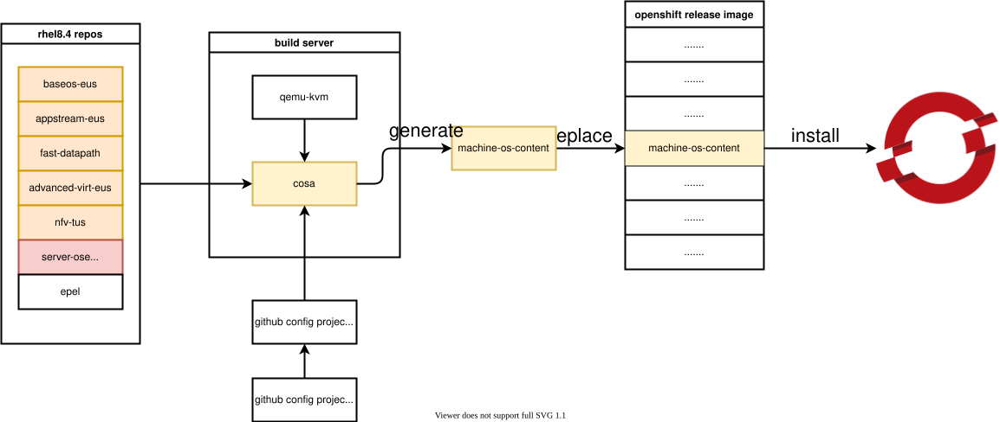
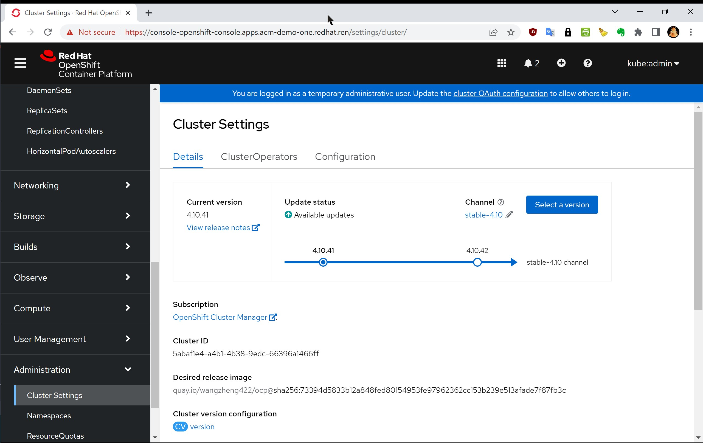

upgrade openshift 4.10 based rhcos to rhel 9.1 / 升级 openshift 4.10 基础操作系统到 rhel 9.1 支持海光x86 cpu
我们项目中，要求openshift支持海光x86 cpu，linux kernel大概是在4.20以后，合并了对海光x86 cpu支持的代码。但是当前版本的openshift(<4.12)都是基于rhel8的，rhel8的内核是基于4.18版本改造而来，还没有海光x86 cpu的支持。
好在redhat已经推出了rhel9, 是基于kernel 5.14的，经过实际测试，rhel9.1是能在海光x86 cpu上正常安装和运行的，那么我们就来试试，把openshift 4.10的底层操作系统rhcos，升级到rhel9.1的内核。
In our project, openshift is required to support Hygon x86 cpu, and the linux kernel is probably after 4.20, which merged the code supporting Hygon x86 cpu. However, the current version of openshift (<4.12) is based on rhel8, and the kernel of rhel8 is modified based on version 4.18, and there is no support for Hygon x86 cpu.
Fortunately, redhat has launched rhel9, which is based on kernel 5.14. After actual testing, rhel9.1 can be installed and run normally on Hygon x86 cpu, so let’s try it and use rhcos, the underlying operating system of openshift 4.10, Upgrade to rhel9.1 kernel.
⚠️⚠️⚠️注意，本文所述方法，涉及到了以下问题，不能使用在生产环境中，只能作为 PoC 应急，或者研究学习之用。如果确实是项目急需，请和红帽GPS部门沟(gěi)通(qián)，获得支持。
- ⚠️编译需要多个 rhel 相关的特种源，而且还是 eus, tus 版本，这些都需要单独购买
- ⚠️编译需要一个红帽内部的 repo 源，属于红帽机密
- ⚠️自定义的 rhcos 不能得到红帽 CEE 支持
⚠️⚠️⚠️ Note that the method described in this article involves the following issues and cannot be used in a production environment. It can only be used as a PoC emergency or for research and learning. If it is really urgent for the project, please communicate with the Red Hat GPS department for support.
- ⚠️ Compilation requires multiple rhel-related special sources, and they are also eus and tus versions, which need to be purchased separately
- ⚠️ Compilation requires a Red Hat internal repo source, which is Red Hat Confidential
- ⚠️ Custom rhcos cannot be supported by Red Hat CEE
本次实验的架构图如下： The architecture diagram of this experiment is as follows:

过程中，重度使用了 cosa , 这个是 coreos-assembler 工具集中的命令，他封装了一系列的工具，根据一个配置文件项目，来自动化的编译出来 coreos/rhcos 镜像。
In the process, cosa is heavily used, which is a command in the coreos-assembler tool set. It encapsulates a series of tools and automatically compiles the coreos/rhcos image according to a configuration file project.
编译成果 / compiling result
以下是编译成果 / The following is the compiling result
- openshift4.10.41 release image
- quay.io/wangzheng422/ocp:4.10.41-rhel-9.1-v02
- openshift4.10.41 os images
- 百度分享 / baidu sharing: https://pan.baidu.com/s/16_T72CqQeS2rLJ4MzW4dEQ?pwd=zpbg
⚠️⚠️⚠️ 另外，编译成果并没有严格测试，还需要客户根据自己的场景，完善的测试以后，才可以使用。
⚠️⚠️⚠️ In addition, the compilation results have not been strictly tested, and customers need to complete the test according to their own scenarios before they can be used.
视频讲解 / Video explanation
准备 dnf repo 源 / Prepare the dnf repo source
注意，这些 repo 源都是需要特殊单独购买，请联系红帽销售和GPS服务部门。
Note that these repo sources are required to be purchased separately, please contact Red Hat Sales and GPS Services.
rhel 9.1
我们首先要做的，是准备一个rhel9.1的rpm repo，这里有准备步骤。很遗憾，其中有几个openshift专用的repo，是不公开的。如果客户必须要这些repo的访问权限，请联系对口的SA，在公司内部申请试试。
# install a rhel on vultr
# disable user/passwd login
# ChallengeResponseAuthentication no
# PasswordAuthentication no
# UsePAM no
# sed -i 's/PasswordAuthentication yes/PasswordAuthentication no/g' /etc/ssh/sshd_config
# sed -i 's/UsePAM yes/UsePAM no/g' /etc/ssh/sshd_config
cat << EOF > /etc/ssh/sshd_config.d/99-wzh.conf
PasswordAuthentication no
UsePAM no
EOF
systemctl restart sshd
ssh root@v.redhat.ren -o PubkeyAuthentication=no
# root@v.redhat.ren: Permission denied (publickey,gssapi-keyex,gssapi-with-mic).
subscription-manager register --auto-attach --username ******** --password ********
# subscription-manager release --list
# subscription-manager release --set=8.4
# subscription-manager config --rhsm.baseurl=https://china.cdn.redhat.com
subscription-manager repos --list > list
subscription-manager repos \
--enable="rhel-9-for-x86_64-baseos-rpms" \
--enable="rhel-9-for-x86_64-appstream-rpms" \
--enable="codeready-builder-for-rhel-9-x86_64-rpms" \
#
dnf -y install https://dl.fedoraproject.org/pub/epel/epel-release-latest-9.noarch.rpm
dnf install -y htop createrepo_c
dnf install -y https://download-ib01.fedoraproject.org/pub/epel/8/Everything/x86_64/Packages/b/byobu-5.133-1.el8.noarch.rpm
# byobu
dnf update -y
reboot
mkdir -p /data/dnf
# Create new empty partitions, and filesystem
parted -s /dev/vdb mklabel gpt
parted -s /dev/vdb unit mib mkpart primary 0% 100%
mkfs.ext4 /dev/vdb1
cat << EOF >> /etc/fstab
/dev/vdb1 /data/dnf ext4 defaults,noatime,nofail 0 0
EOF
mount /dev/vdb1 /data/dnf
mkdir -p /data/dnf/dnf-ocp
cd /data/dnf/dnf-ocp
# subscription-manager release --set=9.0
# dnf reposync --repoid rhel-9-for-x86_64-baseos-eus-rpms -m --download-metadata --delete -n
# dnf reposync --repoid=rhel-9-for-x86_64-appstream-eus-rpms -m --download-metadata --delete -n
dnf reposync --repoid rhel-9-for-x86_64-baseos-rpms -m --download-metadata --delete -n
dnf reposync --repoid=rhel-9-for-x86_64-appstream-rpms -m --download-metadata --delete -n
dnf reposync --repoid=rhel-9-for-x86_64-nfv-rpms -m --download-metadata --delete -n
# dnf reposync --repoid=advanced-virt-for-rhel-8-x86_64-eus-rpms -m --download-metadata --delete -n
dnf reposync --repoid=fast-datapath-for-rhel-9-x86_64-rpms -m --download-metadata --delete -n
subscription-manager release --set=9
# fix for coreos-installer version
mkdir -p /data/dnf/dnf-ocp/fixes
cd /data/dnf/dnf-ocp/fixes
# dnf download --resolve --alldeps coreos-installer coreos-installer-bootinfra
dnf download --resolve coreos-installer coreos-installer-bootinfra selinux-policy
createrepo ./
# username, and password is confidensial
cat << 'EOF' > /etc/yum.repos.d/ose.repo
[rhel-8-server-ose]
name=rhel-8-server-ose
enabled=1
gpgcheck=0
baseurl=https://mirror.openshift.com/enterprise/reposync/4.10/rhel-8-server-ose-rpms/
module_hotfixes=true
username=??????
password=??????
[rhel-9-server-ose]
name=rhel-9-server-ose
enabled=1
gpgcheck=0
baseurl=https://mirror.openshift.com/enterprise/reposync/4.13/rhel-9-server-ose-rpms/
module_hotfixes=true
username=??????
password=??????
[rhel-9-server-ironic]
name=rhel-9-server-ironic
enabled=1
gpgcheck=0
baseurl=https://mirror.openshift.com/enterprise/reposync/4.13/rhel-9-server-ironic-rpms/
module_hotfixes=true
username=??????
password=??????
EOF
dnf reposync --repoid=rhel-8-server-ose -m --download-metadata --delete -n
dnf reposync --repoid=rhel-9-server-ose -m --download-metadata --delete -n
dnf reposync --repoid=rhel-9-server-ironic -m --download-metadata --delete -n
systemctl disable --now firewalld
# host the repo with web service
cd /data/dnf/dnf-ocp
python3 -m http.server 5180准备 build 服务器 / Prepare the build server
注意，build 服务器需要支持 kvm ，如果选用的云平台，需要云平台支持嵌套虚拟化。
本次实验，我们选用了一台 centos stream 8 的云主机。
Note that the build server needs to support kvm. If you choose a cloud platform, the cloud platform needs to support nested virtualization.
In this experiment, we chose a cloud host of centos stream 8.
# install a centos stream 8 on digitalocean,
# 2c 2G for ostree only
# 4c 8G for iso because it needs metal first
dnf install -y epel-release
dnf install -y byobu htop
dnf update -y
reboot
dnf groupinstall -y server
dnf install -y lftp podman
dnf -y install qemu-kvm libvirt libguestfs-tools virt-install virt-viewer virt-manager tigervnc-server
systemctl disable --now firewalld
systemctl enable --now libvirtd开始编译 rhcos / Start compiling rhcos
cosa 的输入是一个配置文件项目，上游是 https://github.com/openshift/os ， 我们做了下游扩展，加入了各种repo源，并且把操作系统名字，加入了 wzh 的标记。
The input of cosa is a configuration file project, and the upstream is https://github.com/openshift/os. We made downstream extensions, added the rpm repo source, added the operating system name, added the wzh mark.
# machine-os-images just copy a iso into container
# machine-os-content is our target
# follow coreos-assembler instruction
# https://github.com/coreos/coreos-assembler/blob/main/docs/building-fcos.md
# https://coreos.github.io/coreos-assembler/
# https://github.com/openshift/os/blob/master/docs/development-rhcos.md
# https://github.com/openshift/os/blob/master/docs/development.md
# https://github.com/openshift/os/blob/master/docs/development.md
# https://github.com/openshift/release/blob/master/core-services/release-controller/README.md#rpm-mirrors
podman login ************* quay.io
# export COREOS_ASSEMBLER_CONTAINER=quay.io/coreos-assembler/coreos-assembler:rhcos-4.12
export COREOS_ASSEMBLER_CONTAINER=quay.io/coreos-assembler/coreos-assembler:latest
podman pull $COREOS_ASSEMBLER_CONTAINER
cosa() {
env | grep COREOS_ASSEMBLER
local -r COREOS_ASSEMBLER_CONTAINER_LATEST="quay.io/coreos-assembler/coreos-assembler:latest"
if [[ -z ${COREOS_ASSEMBLER_CONTAINER} ]] && $(podman image exists ${COREOS_ASSEMBLER_CONTAINER_LATEST}); then
local -r cosa_build_date_str="$(podman inspect -f "{{.Created}}" ${COREOS_ASSEMBLER_CONTAINER_LATEST} | awk '{print $1}')"
local -r cosa_build_date="$(date -d ${cosa_build_date_str} +%s)"
if [[ $(date +%s) -ge $((cosa_build_date + 60*60*24*7)) ]] ; then
echo -e "\e[0;33m----" >&2
echo "The COSA container image is more that a week old and likely outdated." >&2
echo "You should pull the latest version with:" >&2
echo "podman pull ${COREOS_ASSEMBLER_CONTAINER_LATEST}" >&2
echo -e "----\e[0m" >&2
sleep 10
fi
fi
set -x
podman run --rm -ti --security-opt label=disable --privileged \
--uidmap=1000:0:1 --uidmap=0:1:1000 --uidmap 1001:1001:64536 \
-v ${PWD}:/srv/ --device /dev/kvm --device /dev/fuse \
-v /run/user/0/containers/auth.json:/home/builder/.docker/config.json \
--tmpfs /tmp -v /var/tmp:/var/tmp --name cosa \
${COREOS_ASSEMBLER_CONFIG_GIT:+-v $COREOS_ASSEMBLER_CONFIG_GIT:/srv/src/config/:ro} \
${COREOS_ASSEMBLER_GIT:+-v $COREOS_ASSEMBLER_GIT/src/:/usr/lib/coreos-assembler/:ro} \
${COREOS_ASSEMBLER_CONTAINER_RUNTIME_ARGS} \
${COREOS_ASSEMBLER_CONTAINER:-$COREOS_ASSEMBLER_CONTAINER_LATEST} "$@"
rc=$?; set +x; return $rc
}
rm -rf /data/rhcos
mkdir -p /data/rhcos
cd /data/rhcos
# cosa init --branch wzh-ocp-4.8-rhel-9.1 https://github.com/wangzheng422/machine-os-content
cosa init \
--branch wzh-ocp-4.10-based-on-4.13-rhel-9 \
--variant rhel-coreos-9 \
https://github.com/wangzheng422/machine-os-content
sed -i 's/REPO_IP/45.77.125.88:5180/g' /data/rhcos/src/config/rhel-9.0.repo
cosa fetch
# cosa build ostree
# ......
# Ignored user missing from new passwd file: root
# New passwd entries: clevis, dnsmasq, gluster, systemd-coredump, systemd-journal-remote, unbound
# Ignored group missing from new group file: root
# New group entries: clevis, dnsmasq, gluster, input, kvm, printadmin, render, systemd-coredump, systemd-journal-remote, unbound
# Committing... done
# Metadata Total: 9777
# Metadata Written: 3156
# Content Total: 6635
# Content Written: 1456
# Content Cache Hits: 19307
# Content Bytes Written: 149555523
# 3156 metadata, 22414 content objects imported; 2.0 GB content written
# Wrote commit: 9c9831a17f276a55d263c7856aa61af722ec84d9780405018ac46b3c2c7aa5d6
# New image input checksum: 9062762601fde9b726033297ef1c442589066328334c88268d3952dcf1014826
# None
# New build ID: 48.90.202211260320-wzh-0
# Running: rpm-ostree compose container-encapsulate --max-layers=50 --format-version=1 --repo=/srv/tmp/repo --label=coreos-assembler.image-config-checksum=e748dfefac80583a123d35bfdfe87fcce2c2757f15d8251e8482d1aeb7e4b7a0 --label=coreos-assembler.image-input-checksum=9062762601fde9b726033297ef1c442589066328334c88268d3952dcf1014826 --label=org.opencontainers.image.source=https://github.com/wangzheng422/machine-os-content --label=org.opencontainers.image.revision=331baaa292509c237e8647b598a9768aefbb984d 48.90.202211260320-wzh-0 oci-archive:rhcos-48.90.202211260320-wzh-0-ostree.x86_64.ociarchive.tmp:latest
# Reading packages... done
# Building package mapping... done
# 22414 objects in 511 packages (332 source)
# rpm size: 1978859148
# Earliest changed package: nss-altfiles-2.18.1-20.el9.x86_64 at 2021-08-02 15:39:20 UTC
# 1488 duplicates
# Multiple owners:
# /usr/lib/.build-id/93/1521a98c6e8ca8485e3508ac3ee12e7a0bb233
# /usr/lib/.build-id/fb/c60f5edbc2853811a813d9fb404cdaddfaf70a
# /usr/share/licenses/systemd/LICENSE.LGPL2.1
# Generating container image... done
# Pushed digest: sha256:95ea1eeff653f2ec7ee9a3826978cbe5cadad2e9894d76edffb6a425892fdbab
# Total objects: 25866
# No unreachable objects
# Ignoring non-directory /srv/builds/.build-commit
# + rc=0
# + set +x
# or build with default setting, ostree and qcow2
cosa build
# ......
# + cosa meta --workdir /srv --build 48.90.202211270909-wzh-0 --artifact qemu --artifact-json /srv/tmp/build.qemu/meta.json.new
# /srv/builds/48.90.202211270909-wzh-0/x86_64/meta.json wrote with version stamp 1669540779194835967
# + /usr/lib/coreos-assembler/finalize-artifact rhcos-48.90.202211270909-wzh-0-qemu.x86_64.qcow2 /srv/builds/48.90.202211270909-wzh-0/x86_64/rhcos-48.90.202211270909-wzh-0-qemu.x86_64.qcow2
# + set +x
# Successfully generated: rhcos-48.90.202211270909-wzh-0-qemu.x86_64.qcow2
cosa list
# 48.90.202211270909-wzh-0
# Timestamp: 2022-11-27T09:14:21Z (0:05:40 ago)
# Artifacts: ostree qemu
# Config: wzh-ocp-4.8-based-on-4.13-rhel-9.0 (64094f653298) (dirty)
cosa upload-oscontainer --name "quay.io/wangzheng422/ocp"
# ......
# 2022-11-27 09:22:35,785 INFO - Running command: ['ostree', '--repo=/srv/tmp/containers-storage/vfs/dir/da857426a657461466a3d17f4faa848f71a9a311b2fec5165946adabf5ea3900/srv/repo', 'pull-local', '--disable-fsync', '/srv/tmp/repo', '3c009c9794dc1deea6b419e84e56d17247954d236777842de59abef6ef82658f']
# Writing objects: 55
# 2022-11-27 09:22:41,424 INFO - Running command: ['tar', '-xf', '/srv/builds/48.90.202211270909-wzh-0/x86_64/rhcos-48.90.202211270909-wzh-0-extensions.x86_64.tar']
# 2022-11-27 09:22:41,665 INFO - Running command: ['buildah', '--root=./tmp/containers-storage', '--storage-driver', 'vfs', 'config', '--entrypoint', '["/noentry"]', '-l', 'com.coreos.ostree-commit=3c009c9794dc1deea6b419e84e56d17247954d236777842de59abef6ef82658f', '-l', 'version=48.90.202211270909-wzh-0', '-l', 'com.coreos.rpm.cri-o=1.25.0-53.rhaos4.12.git2002c49.el9.x86_64', '-l', 'com.coreos.rpm.ignition=2.13.0-1.el9.x86_64', '-l', 'com.coreos.rpm.kernel=5.14.0-70.30.1.el9_0.x86_64', '-l', 'com.coreos.rpm.ostree=2022.5-1.el9_0.x86_64', '-l', 'com.coreos.rpm.rpm-ostree=2022.2-2.el9.x86_64', '-l', 'com.coreos.rpm.runc=4:1.1.3-2.el9_0.x86_64', '-l', 'com.coreos.rpm.systemd=250-6.el9_0.1.x86_64', '-l', 'com.coreos.coreos-assembler-commit=538402ec655961f7a79e9745c9a3af67e1123e39', '-l', 'com.coreos.redhat-coreos-commit=64094f6532982cd2118224785b88ba2890659aee', '-l', 'com.coreos.os-extensions=kerberos;kernel-devel;kernel-rt;usbguard;sandboxed-containers', '-l', 'com.coreos.rpm.kernel=5.14.0-70.30.1.el9_0.x86_64', '-l', 'com.coreos.rpm.kernel-rt-core=5.14.0-70.30.1.rt21.102.el9_0.x86_64', '-l', 'io.openshift.build.version-display-names=machine-os=Red Hat Enterprise Linux CoreOS', '-l', 'io.openshift.build.versions=machine-os=48.90.202211270909-wzh-0', 'ubi-working-container']
# WARN[0000] cmd "/bin/bash" exists and will be passed to entrypoint as a parameter
# Committing container...
# Getting image source signatures
# Copying blob 33204bfe17ee skipped: already exists
# Copying blob 06081b81a130 done
# Copying config 031de9981c done
# Writing manifest to image destination
# Storing signatures
# quay.io/wangzheng422/ocp:48.90.202211270909-wzh-0 031de9981c87301aeaffa5c7a0166067dad7a5c7f86166e999694953b89ef264
# Pushing container
# 2022-11-27 09:23:24,398 INFO - Running command: ['buildah', '--root=./tmp/containers-storage', '--storage-driver', 'vfs', 'push', '--tls-verify', '--authfile=/home/builder/.docker/config.json', '--digestfile=tmp/oscontainer-digest', '--format=v2s2', 'quay.io/wangzheng422/ocp:48.90.202211270909-wzh-0']
# Getting image source signatures
# Copying blob 06081b81a130 done
# Copying blob 33204bfe17ee done
# Copying config 031de9981c done
# Writing manifest to image destination
# Storing signatures
cosa buildextend-metal
# ......
# + cosa meta --workdir /srv --build 48.90.202211270909-wzh-0 --artifact metal --artifact-json /srv/tmp/build.metal/meta.json.new
# /srv/builds/48.90.202211270909-wzh-0/x86_64/meta.json wrote with version stamp 1669541240634979743
# + /usr/lib/coreos-assembler/finalize-artifact rhcos-48.90.202211270909-wzh-0-metal.x86_64.raw /srv/builds/48.90.202211270909-wzh-0/x86_64/rhcos-48.90.202211270909-wzh-0-metal.x86_64.raw
# + set +x
# Successfully generated: rhcos-48.90.202211270909-wzh-0-metal.x86_64.raw
cosa buildextend-metal4k
# ......
# + cosa meta --workdir /srv --build 48.90.202211270909-wzh-0 --artifact metal4k --artifact-json /srv/tmp/build.metal4k/meta.json.new
# /srv/builds/48.90.202211270909-wzh-0/x86_64/meta.json wrote with version stamp 1669541380398141511
# + /usr/lib/coreos-assembler/finalize-artifact rhcos-48.90.202211270909-wzh-0-metal4k.x86_64.raw /srv/builds/48.90.202211270909-wzh-0/x86_64/rhcos-48.90.202211270909-wzh-0-metal4k.x86_64.raw
# + set +x
# Successfully generated: rhcos-48.90.202211270909-wzh-0-metal4k.x86_64.raw
cosa buildextend-live
# ......
# 2022-11-27 09:38:49,575 INFO - Running command: ['/usr/bin/isohybrid', '--uefi', '/srv/tmp/buildpost-live/rhcos-48.90.202211270909-wzh-0-live.x86_64.iso.minimal']
# 2022-11-27 09:38:49,661 INFO - Running command: ['/usr/lib/coreos-assembler/runvm-coreos-installer', 'builds/48.90.202211270909-wzh-0/x86_64/rhcos-48.90.202211270909-wzh-0-metal.x86_64.raw', '', 'pack', 'minimal-iso', '/srv/tmp/buildpost-live/rhcos-48.90.202211270909-wzh-0-live.x86_64.iso', '/srv/tmp/buildpost-live/rhcos-48.90.202211270909-wzh-0-live.x86_64.iso.minimal', '--consume']
# + RUST_BACKTRACE=full
# + chroot /sysroot/ostree/deploy/rhcos/deploy/3c009c9794dc1deea6b419e84e56d17247954d236777842de59abef6ef82658f.0 env -C /srv coreos-installer pack minimal-iso /srv/tmp/buildpost-live/rhcos-48.90.202211270909-wzh-0-live.x86_64.iso /srv/tmp/buildpost-live/rhcos-48.90.202211270909-wzh-0-live.x86_64.iso.minimal --consume
# Packing minimal ISO
# Matched 16 files of 16
# Total bytes skipped: 89430463
# Total bytes written: 747073
# Total bytes written (compressed): 2788
# Verifying that packed image matches digest
# Packing successful!
# + '[' -f /var/tmp/coreos-installer-output ']'
# Updated: builds/48.90.202211270909-wzh-0/x86_64/meta.json
# run them all
cat << 'EOF' > /root/build.sh
# exit when any command fails
set -e
set -x
rm -rf /data/rhcos
mkdir -p /data/rhcos
cd /data/rhcos
export COREOS_ASSEMBLER_CONTAINER=quay.io/coreos-assembler/coreos-assembler:latest
podman pull $COREOS_ASSEMBLER_CONTAINER
cosa() {
env | grep COREOS_ASSEMBLER
local -r COREOS_ASSEMBLER_CONTAINER_LATEST="quay.io/coreos-assembler/coreos-assembler:latest"
if [[ -z ${COREOS_ASSEMBLER_CONTAINER} ]] && $(podman image exists ${COREOS_ASSEMBLER_CONTAINER_LATEST}); then
local -r cosa_build_date_str="$(podman inspect -f "{{.Created}}" ${COREOS_ASSEMBLER_CONTAINER_LATEST} | awk '{print $1}')"
local -r cosa_build_date="$(date -d ${cosa_build_date_str} +%s)"
if [[ $(date +%s) -ge $((cosa_build_date + 60*60*24*7)) ]] ; then
echo -e "\e[0;33m----" >&2
echo "The COSA container image is more that a week old and likely outdated." >&2
echo "You should pull the latest version with:" >&2
echo "podman pull ${COREOS_ASSEMBLER_CONTAINER_LATEST}" >&2
echo -e "----\e[0m" >&2
sleep 10
fi
fi
set -x
podman run --rm -ti --security-opt label=disable --privileged \
--uidmap=1000:0:1 --uidmap=0:1:1000 --uidmap 1001:1001:64536 \
-v ${PWD}:/srv/ --device /dev/kvm --device /dev/fuse \
-v /run/user/0/containers/auth.json:/home/builder/.docker/config.json \
--tmpfs /tmp -v /var/tmp:/var/tmp --name cosa \
${COREOS_ASSEMBLER_CONFIG_GIT:+-v $COREOS_ASSEMBLER_CONFIG_GIT:/srv/src/config/:ro} \
${COREOS_ASSEMBLER_GIT:+-v $COREOS_ASSEMBLER_GIT/src/:/usr/lib/coreos-assembler/:ro} \
${COREOS_ASSEMBLER_CONTAINER_RUNTIME_ARGS} \
${COREOS_ASSEMBLER_CONTAINER:-$COREOS_ASSEMBLER_CONTAINER_LATEST} "$@"
rc=$?; set +x; return $rc
}
cosa init \
--branch wzh-ocp-4.10-based-on-4.13-rhel-9 \
--variant rhel-coreos-9 \
https://github.com/wangzheng422/machine-os-content
sed -i 's/REPO_IP/45.76.173.230:5180/g' /data/rhcos/src/config/rhel-9.0.repo
cosa fetch
cosa build
cosa upload-oscontainer --name "quay.io/wangzheng422/ocp"
cosa buildextend-metal
cosa buildextend-metal4k
cosa buildextend-live
EOF
cd /root
bash /root/build.sh
# podman pull quay.io/wangzheng422/ocp:410.91.202211291516-wzh-0
# podman pull quay.io/wangzheng422/ocp@sha256:c7209dcadf2d27892eab9c692e8afb6a752307270526231961500647591d7129
ls -l /data/rhcos/builds/latest/x86_64/
# total 10333424
# -r--r--r--. 1 root root 66639 Nov 29 15:24 commitmeta.json
# -r--r--r--. 1 root root 473 Nov 29 15:16 coreos-assembler-config-git.json
# -r--r--r--. 1 root root 346037 Nov 29 15:16 coreos-assembler-config.tar.gz
# -rw-r--r--. 1 root root 14107 Nov 29 15:16 manifest.json
# -r--r--r--. 1 root root 33628 Nov 29 15:21 manifest-lock.generated.x86_64.json
# -rw-r--r--. 1 root root 6965 Nov 29 15:43 meta.json
# -r--r--r--. 1 root root 34844 Nov 29 15:21 ostree-commit-object
# -rw-r--r--. 1 root root 347832320 Nov 29 15:28 rhcos-410.91.202211291516-wzh-0-extensions.x86_64.tar
# -rw-r--r--. 1 root root 80525940 Nov 29 15:42 rhcos-410.91.202211291516-wzh-0-live-initramfs.x86_64.img
# -rw-r--r--. 1 root root 11649784 Nov 29 15:43 rhcos-410.91.202211291516-wzh-0-live-kernel-x86_64
# -rw-r--r--. 1 root root 930239488 Nov 29 15:42 rhcos-410.91.202211291516-wzh-0-live-rootfs.x86_64.img
# -rw-r--r--. 1 root root 1028653056 Nov 29 15:43 rhcos-410.91.202211291516-wzh-0-live.x86_64.iso
# -r--r--r--. 1 root root 3596615680 Nov 29 15:34 rhcos-410.91.202211291516-wzh-0-metal4k.x86_64.raw
# -r--r--r--. 1 root root 3596615680 Nov 29 15:32 rhcos-410.91.202211291516-wzh-0-metal.x86_64.raw
# -r--r--r--. 1 root root 965853184 Nov 29 15:24 rhcos-410.91.202211291516-wzh-0-ostree.x86_64.ociarchive
# -r--r--r--. 1 root root 2383609856 Nov 29 15:26 rhcos-410.91.202211291516-wzh-0-qemu.x86_64.qcow2
# ocp 4.8 is too buggy, we switch to ocp 4.10
# https://bugzilla.redhat.com/show_bug.cgi?id=2044808
# Create a new release based on openshift 4.10.41 and override a single image
export BUILDNUMBER=4.10.41
export VAR_RELEASE_VER=$BUILDNUMBER-rhel-9.1-v02
oc adm release new -a /data/pull-secret.json \
--from-release ` curl -s https://mirror.openshift.com/pub/openshift-v4/x86_64/clients/ocp/$BUILDNUMBER/release.txt | grep "Pull From:" | awk '{print $3}' ` \
machine-os-content=quay.io/wangzheng422/ocp@sha256:c7209dcadf2d27892eab9c692e8afb6a752307270526231961500647591d7129 \
--to-image docker.io/wangzheng422/ocp:$VAR_RELEASE_VER
# docker.io/wangzheng422/ocp:4.10.41-rhel-9.1-v02
oc image mirror docker.io/wangzheng422/ocp:$VAR_RELEASE_VER quay.io/wangzheng422/ocp:$VAR_RELEASE_VER
# podman pull quay.io/wangzheng422/ocp:4.10.41-rhel-9.1-v02
# podman pull quay.io/wangzheng422/ocp@sha256:73394d5833b12a848fed80154953fe97962362cc153b239e513afade7f87fb3c
try to install using UPI
我们已经准备好了镜像，那就试试装一个集群出来看看什么样子的。
We have prepared the image, so let’s try to install a cluster to see what it looks like.
on vps, download image and binary for 4.10.41
第一步，还是在公网上，下载一些安装用的文件，这一步不是必须的。我们主要用里面的ansible工具，配置我们环境的dns。
The first step is to download some installation files from the public network. This step is not necessary. We mainly use the ansible tool inside to configure the dns of our environment.
# download image and binary for 4.8.53
# on vultr
rm -rf /data/ocp4/
mkdir -p /data/ocp4/
cd /data/ocp4
export BUILDNUMBER=4.11.18
wget -O openshift-client-linux-${BUILDNUMBER}.tar.gz https://mirror.openshift.com/pub/openshift-v4/x86_64/clients/ocp/${BUILDNUMBER}/openshift-client-linux-${BUILDNUMBER}.tar.gz
wget -O openshift-install-linux-${BUILDNUMBER}.tar.gz https://mirror.openshift.com/pub/openshift-v4/x86_64/clients/ocp/${BUILDNUMBER}/openshift-install-linux-${BUILDNUMBER}.tar.gz
tar -xzf openshift-client-linux-${BUILDNUMBER}.tar.gz -C /usr/local/bin/
tar -xzf openshift-install-linux-${BUILDNUMBER}.tar.gz -C /usr/local/bin/
wget -O opm-linux.tar.gz https://mirror.openshift.com/pub/openshift-v4/x86_64/clients/opm/4.6.1/opm-linux-4.6.1.tar.gz
tar -xzf opm-linux.tar.gz -C /usr/local/bin/
wget https://github.com/operator-framework/operator-registry/releases/download/v1.26.2/linux-amd64-opm
chmod +x linux-amd64-opm
install linux-amd64-opm /usr/local/bin/opm
rm -rf /data/ocp4/
mkdir -p /data/ocp4/tmp
cd /data/ocp4/tmp
git clone https://github.com/wangzheng422/openshift4-shell
cd openshift4-shell
git checkout ocp-4.8
/bin/cp -f prepare.content.with.oc.mirror.sh /data/ocp4/
rm -rf /data/ocp4/tmp
cd /data/ocp4
# bash prepare.content.with.oc.mirror.sh -v 4.11.5,${BUILDNUMBER}, -m ${BUILDNUMBER%.*} -b ocp-4.11
bash prepare.content.with.oc.mirror.sh -v ${BUILDNUMBER}, -m ${BUILDNUMBER%.*} -b ocp-4.8import ocp content into quay
第二步，根据我们自定义的release image，同步安装镜像，到我们内部的镜像仓库，并且抽取安装二进制文件。
The second part, according to our custom release image, synchronously installs the image to our internal mirror warehouse, and extracts the installation binary file.
export BUILDNUMBER=4.11.18
pushd /data/ocp4/${BUILDNUMBER}
tar -xzf openshift-client-linux-${BUILDNUMBER}.tar.gz -C /usr/local/bin/
tar -xzf openshift-install-linux-${BUILDNUMBER}.tar.gz -C /usr/local/bin/
# tar -xzf oc-mirror.tar.gz -C /usr/local/bin/
# chmod +x /usr/local/bin/oc-mirror
install -m 755 /data/ocp4/clients/butane-amd64 /usr/local/bin/butane
# install -m 755 /data/ocp4/clients/coreos-installer_amd64 /usr/local/bin/coreos-installer
popd
SEC_FILE="$XDG_RUNTIME_DIR/containers/auth.json"
# $XDG_RUNTIME_DIR/containers
mkdir -p ${SEC_FILE%/*}
# OR
# SEC_FILE="$HOME/.docker/config.json"
SEC_FILE="$HOME/.config/containers/auth.json"
mkdir -p ${SEC_FILE%/*}
# copy the password file
podman login quaylab.infra.redhat.ren:8443 --username admin --password redhatadmin
export VAR_RELEASE_VER=4.10.41-rhel-9.1-v02
oc adm release mirror -a $SEC_FILE \
--from=quay.io/wangzheng422/ocp:$VAR_RELEASE_VER \
--to=quaylab.infra.wzhlab.top:5443/ocp4/openshift4
# ......
# Success
# Update image: quaylab.infra.wzhlab.top:5443/ocp4/openshift4:4.10.41-x86_64
# Mirror prefix: quaylab.infra.wzhlab.top:5443/ocp4/openshift4
# To use the new mirrored repository to install, add the following section to the install-config.yaml:
# imageContentSources:
# - mirrors:
# - quaylab.infra.wzhlab.top:5443/ocp4/openshift4
# source: quay.io/openshift-release-dev/ocp-v4.0-art-dev
# - mirrors:
# - quaylab.infra.wzhlab.top:5443/ocp4/openshift4
# source: quay.io/wangzheng422/ocp
# To use the new mirrored repository for upgrades, use the following to create an ImageContentSourcePolicy:
# apiVersion: operator.openshift.io/v1alpha1
# kind: ImageContentSourcePolicy
# metadata:
# name: example
# spec:
# repositoryDigestMirrors:
# - mirrors:
# - quaylab.infra.wzhlab.top:5443/ocp4/openshift4
# source: quay.io/openshift-release-dev/ocp-v4.0-art-dev
# - mirrors:
# - quaylab.infra.wzhlab.top:5443/ocp4/openshift4
# source: quay.io/wangzheng422/ocp
# !!!! 注意，以下步骤必须执行，因为版本信息在可执行程序和里面 ！！！
mkdir -p /data/work/ext-client
cd /data/work/ext-client
RELEASE_IMAGE=quay.io/wangzheng422/ocp:$VAR_RELEASE_VER
LOCAL_SECRET_JSON=/data/pull-secret.json
oc adm release extract --registry-config ${LOCAL_SECRET_JSON} --command='openshift-baremetal-install' ${RELEASE_IMAGE}
oc adm release extract --registry-config ${LOCAL_SECRET_JSON} --command='openshift-install' ${RELEASE_IMAGE}
oc adm release extract --registry-config ${LOCAL_SECRET_JSON} --command='oc' ${RELEASE_IMAGE}
# oc adm release extract --registry-config ${LOCAL_SECRET_JSON} --tools=true ${RELEASE_IMAGE}
./openshift-install version
# ./openshift-install 4.10.41
# built from commit 14145f0cbc879ca19cfcb583c86bd01595afb9d5
# release image quay.io/wangzheng422/ocp@sha256:1c6a539ac44c65e2d1005a270e5d05442deaa9b3a0101edab695010a90f09aed
# release architecture amd64
install -m 755 /data/work/ext-client/openshift-install /usr/local/bin/openshift-install
install -m 755 /data/work/ext-client/oc /usr/local/bin/oc
# install -m 755 /data/ocp4/clients/butane-amd64 /usr/local/bin/butanemirror for disconnected
我们把operator用到的镜像，都mirror到内部镜像仓库试试。
# we use oc-mirror from ocp 4.11
cat > /data/ocp4/mirror.yaml << EOF
apiVersion: mirror.openshift.io/v1alpha2
kind: ImageSetConfiguration
# archiveSize: 4
mirror:
platform:
architectures:
- amd64
# - arm64
channels:
# - name: stable-4.11
# type: ocp
# minVersion: 4.11.18
# maxVersion: 4.11.18
# shortestPath: true
# - name: stable-4.10
# type: ocp
# minVersion: 4.10.45
# maxVersion: 4.10.45
# shortestPath: true
graph: false
additionalImages:
- name: registry.redhat.io/redhat/redhat-operator-index:v4.10
- name: registry.redhat.io/redhat/certified-operator-index:v4.10
- name: registry.redhat.io/redhat/community-operator-index:v4.10
- name: registry.redhat.io/redhat/redhat-marketplace-index:v4.10
- name: quay.io/wangzheng422/local-storage-operator:wzh-ocp-4.10-v01
- name: quay.io/wangzheng422/local-storage-bundle:wzh-ocp-4.10-v01
- name: quay.io/wangzheng422/local-diskmaker:wzh-ocp-4.10-v01
- name: quay.io/wangzheng422/local-storage-operator:wzh-ocp-4.10-v01
- name: quay.io/wangzheng422/local-must-gather:wzh-ocp-4.10-v01
- name: quay.io/openshift/origin-kube-rbac-proxy:latest
- name: quay.io/wangzheng422/debug-pod:alma-9.1
operators:
- catalog: registry.redhat.io/redhat/redhat-operator-index:v4.10
packages:
- name: cluster-logging
channels:
- name: stable
minVersion: 5.5.5
- name: elasticsearch-operator
channels:
- name: stable
minVersion: 5.5.5
- name: jaeger-product
channels:
- name: stable
minVersion: 1.39.0-3
- name: kubernetes-nmstate-operator
channels:
- name: stable
minVersion: 4.10.0-202212061900
- name: odf-operator
channels:
- name: stable-4.10
minVersion: 4.10.9
- name: sriov-network-operator
channels:
- name: stable
minVersion: 4.10.0-202212061900
- name: kubevirt-hyperconverged
channels:
- name: stable
minVersion: 4.10.7
- catalog: quay.io/wangzheng422/local-storage-index:wzh-ocp-4.10-v01
packages:
- name: local-storage-operator
channels:
- name: preview
EOF
mkdir -p /data/install/mirror-tmp
cd /data/install/mirror-tmp
oc-mirror --config /data/ocp4/mirror.yaml docker://quaylab.infra.wzhlab.top:5443
mirror to files and import back
之前我们都是直接mirror到内部镜像仓库，但是实际项目环境，是根本不会联网的，所以我们需要先镜像到本地目录/文件，然后从目录/文件导入到内部镜像仓库。这里就按照这个流程做一遍。
mkdir -p /data/ocp4/
mkdir -p /data/ocp-install/images/
mkdir -p /data/ocp-install/clients/
cd /data/ocp4/
export BUILDNUMBER=4.10.41
wget -O openshift-client-linux-${BUILDNUMBER}.tar.gz https://mirror.openshift.com/pub/openshift-v4/x86_64/clients/ocp/${BUILDNUMBER}/openshift-client-linux-${BUILDNUMBER}.tar.gz
wget -O openshift-install-linux-${BUILDNUMBER}.tar.gz https://mirror.openshift.com/pub/openshift-v4/x86_64/clients/ocp/${BUILDNUMBER}/openshift-install-linux-${BUILDNUMBER}.tar.gz
tar -xzf openshift-client-linux-${BUILDNUMBER}.tar.gz -C /usr/local/bin/
tar -xzf openshift-install-linux-${BUILDNUMBER}.tar.gz -C /usr/local/bin/
export BUILDNUMBER=4.11.18
wget -O oc-mirror.tar.gz https://mirror.openshift.com/pub/openshift-v4/x86_64/clients/ocp/${BUILDNUMBER}/oc-mirror.tar.gz
tar -xzf oc-mirror.tar.gz -C /usr/local/bin/
chmod +x /usr/local/bin/oc-mirror
# SEC_FILE="$XDG_RUNTIME_DIR/containers/auth.json"
# # $XDG_RUNTIME_DIR/containers
# mkdir -p ${SEC_FILE%/*}
# OR
SEC_FILE="$HOME/.config/containers/auth.json"
mkdir -p ${SEC_FILE%/*}
# copy the password file
# podman login quaylab.infra.redhat.ren:8443 --username admin --password redhatadmin
export VAR_RELEASE_VER=4.10.41-rhel-9.1-v02
oc adm release mirror -a $SEC_FILE \
--from=quay.io/wangzheng422/ocp:$VAR_RELEASE_VER \
--to-dir=/data/ocp-install/images/
# ......
# Success
# Update image: openshift/release:4.10.41-x86_64
# To upload local images to a registry, run:
# oc image mirror --from-dir=/data/ocp-install/images/ 'file://openshift/release:4.10.41-x86_64*' REGISTRY/REPOSITORY
cd /data/ocp-install/clients/
RELEASE_IMAGE=quay.io/wangzheng422/ocp:$VAR_RELEASE_VER
LOCAL_SECRET_JSON=$SEC_FILE
oc adm release extract --registry-config ${LOCAL_SECRET_JSON} --command='openshift-baremetal-install' ${RELEASE_IMAGE}
oc adm release extract --registry-config ${LOCAL_SECRET_JSON} --command='openshift-install' ${RELEASE_IMAGE}
oc adm release extract --registry-config ${LOCAL_SECRET_JSON} --command='oc' ${RELEASE_IMAGE}
/bin/cp -f /usr/local/bin/oc-mirror ./
cat > /data/ocp4/mirror.yaml << EOF
apiVersion: mirror.openshift.io/v1alpha2
kind: ImageSetConfiguration
# archiveSize: 4
mirror:
platform:
architectures:
- amd64
# - arm64
channels:
# - name: stable-4.11
# type: ocp
# minVersion: 4.11.18
# maxVersion: 4.11.18
# shortestPath: true
# - name: stable-4.10
# type: ocp
# minVersion: 4.10.45
# maxVersion: 4.10.45
# shortestPath: true
graph: false
additionalImages:
- name: registry.redhat.io/redhat/redhat-operator-index:v4.10
- name: registry.redhat.io/redhat/certified-operator-index:v4.10
- name: registry.redhat.io/redhat/community-operator-index:v4.10
- name: registry.redhat.io/redhat/redhat-marketplace-index:v4.10
- name: quay.io/wangzheng422/local-storage-operator:wzh-ocp-4.10-v01
- name: quay.io/wangzheng422/local-storage-bundle:wzh-ocp-4.10-v01
- name: quay.io/wangzheng422/local-diskmaker:wzh-ocp-4.10-v01
- name: quay.io/wangzheng422/local-storage-operator:wzh-ocp-4.10-v01
- name: quay.io/wangzheng422/local-must-gather:wzh-ocp-4.10-v01
- name: quay.io/openshift/origin-kube-rbac-proxy:latest
- name: quay.io/wangzheng422/debug-pod:alma-9.1
operators:
- catalog: registry.redhat.io/redhat/redhat-operator-index:v4.10
packages:
- name: cluster-logging
channels:
- name: stable
minVersion: 5.5.5
- name: elasticsearch-operator
channels:
- name: stable
minVersion: 5.5.5
- name: jaeger-product
channels:
- name: stable
minVersion: 1.39.0-3
- name: kubernetes-nmstate-operator
channels:
- name: stable
minVersion: 4.10.0-202212061900
- name: odf-operator
channels:
- name: stable-4.10
minVersion: 4.10.9
- name: sriov-network-operator
channels:
- name: stable
minVersion: 4.10.0-202212061900
- name: kubevirt-hyperconverged
channels:
- name: stable
minVersion: 4.10.7
- catalog: quay.io/wangzheng422/local-storage-index:wzh-ocp-4.10-v01
packages:
- name: local-storage-operator
channels:
- name: preview
EOF
mkdir -p /data/ocp-install/oc-mirror/
cd /data/ocp-install/oc-mirror/
oc-mirror --config /data/ocp4/mirror.yaml file:///data/ocp-install/oc-mirror/
mkdir -p /data/bypy
cd /data/bypy
cd /data
# export BUILDNUMBER=4.8.17
tar -cvf - ocp-install/ | pigz -c > /data/bypy/ocp-install.tgz
cd /data/bypy
# https://github.com/houtianze/bypy
# yum -y install python3-pip
# pip3 install --user bypy
# /root/.local/bin/bypy list
/root/.local/bin/bypy upload
# test import
tar zvxf ocp-install.tgz
/bin/cp -f ./ocp-install/clients/* /usr/local/bin/
oc image mirror --from-dir=./ocp-install/images/ 'file://openshift/release:4.10.41-x86_64*' quaylab.infra.wzhlab.top:5443/ocp4/openshift4
oc-mirror --from=./ocp-install/oc-mirror/mirror_seq1_000000.tar \
docker://quaylab.infra.wzhlab.top:5443try to config the ocp install
然后，我们就开始定义ocp的安装install配置文件，并且由于我们是UPI安装，我们还要定制iso。
Then, we start to define the installation configuration file of ocp, and since we are installing using UPI, we also need to customize the iso.
# export BUILDNUMBER=4.8.53
# pushd /data/ocp4/${BUILDNUMBER}
# tar -xzf openshift-client-linux-${BUILDNUMBER}.tar.gz -C /usr/local/bin/
# tar -xzf openshift-install-linux-${BUILDNUMBER}.tar.gz -C /usr/local/bin/
# tar -xzf oc-mirror.tar.gz -C /usr/local/bin/
# chmod +x /usr/local/bin/oc-mirror
# install -m 755 /data/ocp4/clients/butane-amd64 /usr/local/bin/butane
# install -m 755 /data/ocp4/clients/coreos-installer_amd64 /usr/local/bin/coreos-installer
# popd
# create a user and create the cluster under the user
useradd -m 3node
# useradd -G wheel 3node
usermod -aG wheel 3node
echo -e "%wheel\tALL=(ALL)\tNOPASSWD: ALL" > /etc/sudoers.d/020_sudo_for_me
su - 3node
ssh-keygen
cat << EOF > ~/.ssh/config
StrictHostKeyChecking no
UserKnownHostsFile=/dev/null
EOF
chmod 600 ~/.ssh/config
cat << 'EOF' >> ~/.bashrc
export BASE_DIR='/home/3node/'
EOF
# export BASE_DIR='/home/3node/'
mkdir -p ${BASE_DIR}/data/{sno/disconnected,install}
# set some parameter of you rcluster
NODE_SSH_KEY="$(cat ${BASE_DIR}/.ssh/id_rsa.pub)"
INSTALL_IMAGE_REGISTRY=quaylab.infra.wzhlab.top:5443
PULL_SECRET='{"auths":{"registry.redhat.io": {"auth": "ZHVtbXk6ZHVtbXk=","email": "noemail@localhost"},"registry.ocp4.redhat.ren:5443": {"auth": "ZHVtbXk6ZHVtbXk=","email": "noemail@localhost"},"'${INSTALL_IMAGE_REGISTRY}'": {"auth": "'$( echo -n 'admin:redhatadmin' | openssl base64 )'","email": "noemail@localhost"}}}'
# NTP_SERVER=192.168.7.11
# HELP_SERVER=192.168.7.11
# KVM_HOST=192.168.7.11
# API_VIP=192.168.7.100
# INGRESS_VIP=192.168.7.101
# CLUSTER_PROVISION_IP=192.168.7.103
# BOOTSTRAP_IP=192.168.7.12
# 定义单节点集群的节点信息
SNO_CLUSTER_NAME=acm-demo-one
SNO_BASE_DOMAIN=wzhlab.top
# echo ${SNO_IF_MAC} > /data/sno/sno.mac
mkdir -p ${BASE_DIR}/data/install
cd ${BASE_DIR}/data/install
/bin/rm -rf *.ign .openshift_install_state.json auth bootstrap manifests master*[0-9] worker*[0-9]
cat << EOF > ${BASE_DIR}/data/install/install-config.yaml
apiVersion: v1
baseDomain: $SNO_BASE_DOMAIN
compute:
- name: worker
replicas: 0
controlPlane:
name: master
replicas: 3
metadata:
name: $SNO_CLUSTER_NAME
networking:
# OVNKubernetes , OpenShiftSDN
networkType: OVNKubernetes
clusterNetwork:
- cidr: 10.128.0.0/14
hostPrefix: 23
- cidr: fd01::/48
hostPrefix: 64
serviceNetwork:
- 172.30.0.0/16
- fd02::/112
machineNetwork:
- cidr: 10.0.0.0/16
- cidr: fd03::/64
platform:
none: {}
pullSecret: '${PULL_SECRET}'
sshKey: |
$( cat ${BASE_DIR}/.ssh/id_rsa.pub | sed 's/^/ /g' )
additionalTrustBundle: |
$( cat /etc/crts/redhat.ren.ca.crt | sed 's/^/ /g' )
imageContentSources:
- mirrors:
- ${INSTALL_IMAGE_REGISTRY}/ocp4/openshift4
source: quay.io/openshift-release-dev/ocp-release
- mirrors:
- ${INSTALL_IMAGE_REGISTRY}/ocp4/openshift4
source: quay.io/openshift-release-dev/ocp-v4.0-art-dev
- mirrors:
- ${INSTALL_IMAGE_REGISTRY}/ocp4/openshift4
source: quay.io/wangzheng422/ocp
EOF
/bin/cp -f ${BASE_DIR}/data/install/install-config.yaml ${BASE_DIR}/data/install/install-config.yaml.bak
openshift-install create manifests --dir=${BASE_DIR}/data/install
# additional ntp config
/bin/cp -f /data/ocp4/ansible-helper/files/* ${BASE_DIR}/data/install/openshift/
#############################################
# run as root if you have not run below, at least one time
# it will generate registry configuration
# copy image registry proxy related config
# cd /data/ocp4
# bash image.registries.conf.sh nexus.infra.redhat.ren:8083
# /bin/cp -f /data/ocp4/image.registries.conf /etc/containers/registries.conf.d/
#############################################
sudo bash -c "cd /data/ocp4 ; bash image.registries.conf.sh quaylab.infra.wzhlab.top:5443 ;"
/bin/cp -f /data/ocp4/99-worker-container-registries.yaml ${BASE_DIR}/data/install/openshift
/bin/cp -f /data/ocp4/99-master-container-registries.yaml ${BASE_DIR}/data/install/openshift
cd ${BASE_DIR}/data/install/
openshift-install --dir=${BASE_DIR}/data/install create ignition-configs
BOOTSTRAP_IP=192.168.77.22
MASTER_01_IP=192.168.77.23
MASTER_02_IP=192.168.77.24
MASTER_03_IP=192.168.77.25
BOOTSTRAP_IPv6=fd03::22
MASTER_01_IPv6=fd03::23
MASTER_02_IPv6=fd03::24
MASTER_03_IPv6=fd03::25
BOOTSTRAP_HOSTNAME=bootstrap-demo
MASTER_01_HOSTNAME=master-01-demo
MASTER_02_HOSTNAME=master-02-demo
MASTER_03_HOSTNAME=master-03-demo
BOOTSTRAP_INTERFACE=enp1s0
MASTER_01_INTERFACE=enp1s0
MASTER_02_INTERFACE=enp1s0
MASTER_03_INTERFACE=enp1s0
BOOTSTRAP_DISK=/dev/vda
MASTER_01_DISK=/dev/vda
MASTER_02_DISK=/dev/vda
MASTER_03_DISK=/dev/vda
OCP_GW=192.168.77.11
OCP_NETMASK=255.255.255.0
OCP_NETMASK_S=24
OCP_DNS=192.168.77.11
OCP_GW_v6=fd03::11
OCP_NETMASK_v6=64
# HTTP_PATH=http://192.168.7.11:8080/ignition
source /data/ocp4/acm.fn.sh
# 我们会创建一个wzh用户，密码是redhat，这个可以在第一次启动的是，从console/ssh直接用用户名口令登录
# 方便排错和研究
VAR_PWD_HASH="$(python3 -c 'import crypt,getpass; print(crypt.crypt("redhat"))')"
cat ${BASE_DIR}/data/install/bootstrap.ign \
| jq --arg VAR "$VAR_PWD_HASH" --arg VAR_SSH "$NODE_SSH_KEY" '.passwd.users += [{ "name": "wzh", "system": true, "passwordHash": $VAR , "sshAuthorizedKeys": [ $VAR_SSH ], "groups": [ "adm", "wheel", "sudo", "systemd-journal" ] }]' \
| jq -c . \
> ${BASE_DIR}/data/install/bootstrap-iso.ign
cat ${BASE_DIR}/data/install/master.ign \
| jq --arg VAR "$VAR_PWD_HASH" --arg VAR_SSH "$NODE_SSH_KEY" '.passwd.users += [{ "name": "wzh", "system": true, "passwordHash": $VAR , "sshAuthorizedKeys": [ $VAR_SSH ], "groups": [ "adm", "wheel", "sudo", "systemd-journal" ] }]' \
| jq -c . \
> ${BASE_DIR}/data/install/master-iso.ign
VAR_IMAGE_VER=410.91.202211291516-wzh-0
cd ${BASE_DIR}/data/install/
/bin/cp -f /data/work/ext-client/iso/rhcos-$VAR_IMAGE_VER-live.x86_64.iso bootstrap.iso
/bin/cp -f bootstrap.iso master01.iso
/bin/cp -f bootstrap.iso master02.iso
/bin/cp -f bootstrap.iso master03.iso
sudo /bin/cp -f /data/work/ext-client/iso/rhcos-$VAR_IMAGE_VER-metal.x86_64.raw /data/dnf/
sudo /bin/cp -f ${BASE_DIR}/data/install/{bootstrap,master}-iso.ign /data/dnf/
# for ipv4 only
coreos-installer iso kargs modify -a "ip=$BOOTSTRAP_IP::$OCP_GW:$OCP_NETMASK:$BOOTSTRAP_HOSTNAME:$BOOTSTRAP_INTERFACE:none nameserver=$OCP_DNS coreos.inst.install_dev=$BOOTSTRAP_DISK coreos.inst.ignition_url=http://192.168.77.11:5000/bootstrap-iso.ign coreos.inst.image_url=http://192.168.77.11:5000/rhcos-$VAR_IMAGE_VER-metal.x86_64.raw coreos.inst.insecure" bootstrap.iso
coreos-installer iso kargs modify -a "ip=$MASTER_01_IP::$OCP_GW:$OCP_NETMASK:$MASTER_01_HOSTNAME:$MASTER_01_INTERFACE:none nameserver=$OCP_DNS coreos.inst.install_dev=$MASTER_01_DISK coreos.inst.ignition_url=http://192.168.77.11:5000/master-iso.ign coreos.inst.image_url=http://192.168.77.11:5000/rhcos-$VAR_IMAGE_VER-metal.x86_64.raw coreos.inst.insecure" master01.iso
coreos-installer iso kargs modify -a "ip=$MASTER_02_IP::$OCP_GW:$OCP_NETMASK:$MASTER_02_HOSTNAME:$MASTER_02_INTERFACE:none nameserver=$OCP_DNS coreos.inst.install_dev=$MASTER_02_DISK coreos.inst.ignition_url=http://192.168.77.11:5000/master-iso.ign coreos.inst.image_url=http://192.168.77.11:5000/rhcos-$VAR_IMAGE_VER-metal.x86_64.raw coreos.inst.insecure" master02.iso
coreos-installer iso kargs modify -a "ip=$MASTER_03_IP::$OCP_GW:$OCP_NETMASK:$MASTER_03_HOSTNAME:$MASTER_03_INTERFACE:none nameserver=$OCP_DNS coreos.inst.install_dev=$MASTER_03_DISK coreos.inst.ignition_url=http://192.168.77.11:5000/master-iso.ign coreos.inst.image_url=http://192.168.77.11:5000/rhcos-$VAR_IMAGE_VER-metal.x86_64.raw coreos.inst.insecure" master03.iso
# for ipv4 / ipv6 dual stack
coreos-installer iso kargs modify -a " ip=$BOOTSTRAP_IP::$OCP_GW:$OCP_NETMASK:$BOOTSTRAP_HOSTNAME:$BOOTSTRAP_INTERFACE:none nameserver=$OCP_DNS ip=[$BOOTSTRAP_IPv6]::[$OCP_GW_v6]:$OCP_NETMASK_v6:$BOOTSTRAP_HOSTNAME:$BOOTSTRAP_INTERFACE:none coreos.inst.install_dev=$BOOTSTRAP_DISK coreos.inst.ignition_url=http://192.168.77.11:5000/bootstrap-iso.ign coreos.inst.image_url=http://192.168.77.11:5000/rhcos-$VAR_IMAGE_VER-metal.x86_64.raw coreos.inst.insecure " bootstrap.iso
coreos-installer iso kargs modify -a " ip=$MASTER_01_IP::$OCP_GW:$OCP_NETMASK:$MASTER_01_HOSTNAME:$MASTER_01_INTERFACE:none nameserver=$OCP_DNS ip=[$MASTER_01_IPv6]::[$OCP_GW_v6]:$OCP_NETMASK_v6:$MASTER_01_HOSTNAME:$MASTER_01_INTERFACE:none coreos.inst.install_dev=$MASTER_01_DISK coreos.inst.ignition_url=http://192.168.77.11:5000/master-iso.ign coreos.inst.image_url=http://192.168.77.11:5000/rhcos-$VAR_IMAGE_VER-metal.x86_64.raw coreos.inst.insecure " master01.iso
coreos-installer iso kargs modify -a " ip=$MASTER_02_IP::$OCP_GW:$OCP_NETMASK:$MASTER_02_HOSTNAME:$MASTER_02_INTERFACE:none nameserver=$OCP_DNS ip=[$MASTER_02_IPv6]::[$OCP_GW_v6]:$OCP_NETMASK_v6:$MASTER_02_HOSTNAME:$MASTER_02_INTERFACE:none coreos.inst.install_dev=$MASTER_02_DISK coreos.inst.ignition_url=http://192.168.77.11:5000/master-iso.ign coreos.inst.image_url=http://192.168.77.11:5000/rhcos-$VAR_IMAGE_VER-metal.x86_64.raw coreos.inst.insecure " master02.iso
coreos-installer iso kargs modify -a " ip=$MASTER_03_IP::$OCP_GW:$OCP_NETMASK:$MASTER_03_HOSTNAME:$MASTER_03_INTERFACE:none nameserver=$OCP_DNS ip=[$MASTER_03_IPv6]::[$OCP_GW_v6]:$OCP_NETMASK_v6:$MASTER_03_HOSTNAME:$MASTER_03_INTERFACE:none coreos.inst.install_dev=$MASTER_03_DISK coreos.inst.ignition_url=http://192.168.77.11:5000/master-iso.ign coreos.inst.image_url=http://192.168.77.11:5000/rhcos-$VAR_IMAGE_VER-metal.x86_64.raw coreos.inst.insecure " master03.isodeploy on kvm host
有了iso文件，我们就可以用他们启动kvm，开始安装了，这一部分，可以参考引用文档，这里就不重复写了。
With the iso files, we can use them to start kvm and start the installation. For this part, you can refer to the reference document, so I will not repeat it here.
result
等着安装完成，什么都不需要做，然后运行下面的命令，就能得到我们集群的登录参数了。
之后，我们登录到节点，就能看到，节点的kernel已经升级好了。
Wait for the installation to complete, you don’t need to do anything, and then run the following command to get the login parameters of our cluster.
After that, when we log in to the node, we can see that the kernel of the node has been upgraded.
openshift-install wait-for install-complete --log-level debug
# ......
# INFO Waiting up to 10m0s (until 12:31PM) for the openshift-console route to be created...
# DEBUG Route found in openshift-console namespace: console
# DEBUG OpenShift console route is admitted
# INFO Install complete!
# INFO To access the cluster as the system:admin user when using 'oc', run 'export KUBECONFIG=/home/3node/data/install/auth/kubeconfig'
# INFO Access the OpenShift web-console here: https://console-openshift-console.apps.acm-demo-one.wzhlab.top
# INFO Login to the console with user: "kubeadmin", and password: "NpBWx-CM25p-oykYx-TBAoy"
# DEBUG Time elapsed per stage:
# DEBUG Cluster Operators: 6m44s
# INFO Time elapsed: 6m44spassword login and oc config
# init setting for helper node
cat << EOF > ~/.ssh/config
StrictHostKeyChecking no
UserKnownHostsFile=/dev/null
EOF
chmod 600 ~/.ssh/config
cat > ${BASE_DIR}/data/install/crack.txt << 'EOF'
echo redhat | sudo passwd --stdin root
sudo sh -c 'echo "PasswordAuthentication yes" > /etc/ssh/sshd_config.d/99-wzh.conf '
sudo sh -c 'echo "PermitRootLogin yes" >> /etc/ssh/sshd_config.d/99-wzh.conf '
sudo sh -c 'echo "ClientAliveInterval 1800" >> /etc/ssh/sshd_config.d/99-wzh.conf '
sudo systemctl restart sshd
sudo sh -c 'echo "export KUBECONFIG=/etc/kubernetes/static-pod-resources/kube-apiserver-certs/secrets/node-kubeconfigs/localhost.kubeconfig" >> /root/.bashrc'
sudo sh -c 'echo "RET=\`oc config use-context system:admin\`" >> /root/.bashrc'
EOF
for i in 23 24 25
do
ssh core@192.168.77.$i < ${BASE_DIR}/data/install/crack.txt
donefrom other host
# https://unix.stackexchange.com/questions/230084/send-the-password-through-stdin-in-ssh-copy-id
dnf install -y sshpass
for i in 23 24 25
do
sshpass -p 'redhat' ssh-copy-id root@192.168.77.$i
donelog into ocp to check
我们登录到openshift里面，看看成果吧。
Let’s log in to openshift and see the results.
# login to master-01
uname -a
# Linux master-01-demo 5.14.0-162.6.1.el9_1.x86_64 #1 SMP PREEMPT_DYNAMIC Fri Sep 30 07:36:03 EDT 2022 x86_64 x86_64 x86_64 GNU/Linux
cat /etc/os-release
# NAME="Red Hat Enterprise Linux CoreOS"
# ID="rhcos"
# ID_LIKE="rhel fedora"
# VERSION="410.91.202211291516-wzh-0"
# VERSION_ID="4.10"
# VARIANT="CoreOS"
# VARIANT_ID=coreos
# PLATFORM_ID="platform:el9"
# PRETTY_NAME="Red Hat Enterprise Linux CoreOS 410.91.202211291516-wzh-0 (Plow)"
# ANSI_COLOR="0;31"
# CPE_NAME="cpe:/o:redhat:enterprise_linux:9::coreos"
# HOME_URL="https://www.redhat.com/"
# DOCUMENTATION_URL="https://docs.openshift.com/container-platform/4.10/"
# BUG_REPORT_URL="https://bugzilla.redhat.com/"
# REDHAT_BUGZILLA_PRODUCT="OpenShift Container Platform"
# REDHAT_BUGZILLA_PRODUCT_VERSION="4.10"
# REDHAT_SUPPORT_PRODUCT="OpenShift Container Platform"
# REDHAT_SUPPORT_PRODUCT_VERSION="4.10"
# OPENSHIFT_VERSION="4.10"
# RHEL_VERSION="9.1"
# OSTREE_VERSION="410.91.202211291516-wzh-0"
lscpu
# Architecture: x86_64
# CPU op-mode(s): 32-bit, 64-bit
# Address sizes: 48 bits physical, 48 bits virtual
# Byte Order: Little Endian
# CPU(s): 128
# On-line CPU(s) list: 0-127
# Vendor ID: HygonGenuine
# BIOS Vendor ID: Chengdu Hygon
# Model name: Hygon C86 7285 32-core Processor
# BIOS Model name: Hygon C86 7285 32-core Processor
# CPU family: 24
# Model: 1
# Thread(s) per core: 2
# Core(s) per socket: 32
# Socket(s): 2
# Stepping: 1
# Frequency boost: enabled
# CPU max MHz: 2000.0000
# CPU min MHz: 1200.0000
# BogoMIPS: 4000.04
# Flags: fpu vme de pse tsc msr pae mce cx8 apic sep mtrr pge mca cmov pat pse36 clflush mmx fxsr sse sse2 ht syscall nx mmxext fxsr_opt pdpe1gb rd
# tscp lm constant_tsc rep_good nopl nonstop_tsc cpuid extd_apicid amd_dcm aperfmperf rapl pni pclmulqdq monitor ssse3 fma cx16 sse4_1 sse4_
# 2 movbe popcnt aes xsave avx f16c rdrand lahf_lm cmp_legacy svm extapic cr8_legacy abm sse4a misalignsse 3dnowprefetch osvw skinit wdt tce
# topoext perfctr_core perfctr_nb bpext perfctr_llc mwaitx cpb hw_pstate ssbd ibpb vmmcall fsgsbase bmi1 avx2 smep bmi2 rdseed adx smap clf
# lushopt sha_ni xsaveopt xsavec xgetbv1 xsaves clzero irperf xsaveerptr arat npt lbrv svm_lock nrip_save tsc_scale vmcb_clean flushbyasid d
# ecodeassists pausefilter pfthreshold avic v_vmsave_vmload vgif overflow_recov succor smca sme sev sev_es
# Virtualization features:
# Virtualization: AMD-V
# Caches (sum of all):
# L1d: 2 MiB (64 instances)
# L1i: 4 MiB (64 instances)
# L2: 32 MiB (64 instances)
# L3: 128 MiB (16 instances)
# NUMA:
# NUMA node(s): 8
# NUMA node0 CPU(s): 0-7,64-71
# NUMA node1 CPU(s): 8-15,72-79
# NUMA node2 CPU(s): 16-23,80-87
# NUMA node3 CPU(s): 24-31,88-95
# NUMA node4 CPU(s): 32-39,96-103
# NUMA node5 CPU(s): 40-47,104-111
# NUMA node6 CPU(s): 48-55,112-119
# NUMA node7 CPU(s): 56-63,120-127
# Vulnerabilities:
# Itlb multihit: Not affected
# L1tf: Not affected
# Mds: Not affected
# Meltdown: Not affected
# Mmio stale data: Not affected
# Retbleed: Mitigation; untrained return thunk; SMT vulnerable
# Spec store bypass: Mitigation; Speculative Store Bypass disabled via prctl
# Spectre v1: Mitigation; usercopy/swapgs barriers and __user pointer sanitization
# Spectre v2: Mitigation; Retpolines, IBPB conditional, STIBP disabled, RSB filling, PBRSB-eIBRS Not affected
# Srbds: Not affected
# Tsx async abort: Not affected
oc get mcp
# NAME CONFIG UPDATED UPDATING DEGRADED MACHINECOUNT READYMACHINECOUNT UPDATEDMACHINECOUNT DEGRADEDMACHINECOUNT AGE
# master rendered-master-e21c00ca880030866d0c598d24ca301b True False False 3 3 3 0 40m
# worker rendered-worker-537f39ac419adbe3ede22a4d09132329 True False False 0 0 0 0 40m
oc get node
# NAME STATUS ROLES AGE VERSION
# master-01-demo Ready master,worker 45m v1.23.12+8a6bfe4
# master-02-demo Ready master,worker 44m v1.23.12+8a6bfe4
# master-03-demo Ready master,worker 43m v1.23.12+8a6bfe4
oc get clusterversion
# NAME VERSION AVAILABLE PROGRESSING SINCE STATUS
# version 4.10.41 True False 5h30m Cluster version is 4.10.41
oc get co
# NAME VERSION AVAILABLE PROGRESSING DEGRADED SINCE MESSAGE
# authentication 4.10.41 True False False 19m
# baremetal 4.10.41 True False False 43m
# cloud-controller-manager 4.10.41 True False False 49m
# cloud-credential 4.10.41 True False False 50m
# cluster-autoscaler 4.10.41 True False False 43m
# config-operator 4.10.41 True False False 44m
# console 4.10.41 True False False 28m
# csi-snapshot-controller 4.10.41 True False False 32m
# dns 4.10.41 True False False 32m
# etcd 4.10.41 True False False 42m
# image-registry 4.10.41 True False False 30m
# ingress 4.10.41 True False False 32m
# insights 4.10.41 True False False 90s
# kube-apiserver 4.10.41 True False False 40m
# kube-controller-manager 4.10.41 True False False 41m
# kube-scheduler 4.10.41 True False False 40m
# kube-storage-version-migrator 4.10.41 True False False 30m
# machine-api 4.10.41 True False False 43m
# machine-approver 4.10.41 True False False 43m
# machine-config 4.10.41 True False False 43m
# marketplace 4.10.41 True False False 43m
# monitoring 4.10.41 True False False 36m
# network 4.10.41 True False False 44m
# node-tuning 4.10.41 True False False 43m
# openshift-apiserver 4.10.41 True False False 32m
# openshift-controller-manager 4.10.41 True False False 32m
# openshift-samples 4.10.41 True False False 37m
# operator-lifecycle-manager 4.10.41 True False False 43m
# operator-lifecycle-manager-catalog 4.10.41 True False False 43m
# operator-lifecycle-manager-packageserver 4.10.41 True False False 32m
# service-ca 4.10.41 True False False 44m
# storage 4.10.41 True False False 44m
other config to fix hygon deploy errors
disk treated as removalable disk (flag RM)
不知道是海关x86 cpu的问题，还是这个服务器主板的问题，所有内置硬盘都会认成移动硬盘。在主板bios里面，sata controller没有可以配置的项，只有海光cpu有相关的配置，ACHI的相关配置，没有关闭热插拔的选项。
这个问题，对于安装openshift倒是没看出来有什么影响，但是会影响安装openshift data fundation(odf)，因为odf安装的时候，会默认扫描节点的硬盘，然后把移动硬盘都排除。结果，海光cpu的服务器，就变成没有硬盘可以来装了。
没办法，我们只好定制local storage operator，这个东西是odf的底层，真正的硬盘扫描，就是这个operator干的。
# you can see the RM flag is set to 1
lsblk
# NAME MAJ:MIN RM SIZE RO TYPE MOUNTPOINTS
# sda 8:0 1 3.6T 0 disk
# |-sda1 8:1 1 1M 0 part
# |-sda2 8:2 1 127M 0 part
# |-sda3 8:3 1 384M 0 part /boot
# `-sda4 8:4 1 3.6T 0 part /var/lib/kubelet/pods/9c993e46-ed1f-4f5c-a48a-bf563a29d6b8/volume-subpaths/etc/tuned/5
# /var/lib/kubelet/pods/9c993e46-ed1f-4f5c-a48a-bf563a29d6b8/volume-subpaths/etc/tuned/4
# /var/lib/kubelet/pods/9c993e46-ed1f-4f5c-a48a-bf563a29d6b8/volume-subpaths/etc/tuned/3
# /var/lib/kubelet/pods/9c993e46-ed1f-4f5c-a48a-bf563a29d6b8/volume-subpaths/etc/tuned/2
# /var/lib/kubelet/pods/9c993e46-ed1f-4f5c-a48a-bf563a29d6b8/volume-subpaths/etc/tuned/1
# /var/lib/containers/storage/overlay
# /var
# /sysroot/ostree/deploy/rhcos/var
# /usr
# /etc
# /
# /sysroot
# sdb 8:16 1 447.1G 0 disk
# sdc 8:32 1 447.1G 0 disk
dmesg | grep sdb
# [ 6.900118] sd 16:0:0:0: [sdb] 937703088 512-byte logical blocks: (480 GB/447 GiB)
# [ 6.900134] sd 16:0:0:0: [sdb] 4096-byte physical blocks
# [ 6.900206] sd 16:0:0:0: [sdb] Write Protect is off
# [ 6.900211] sd 16:0:0:0: [sdb] Mode Sense: 00 3a 00 00
# [ 6.900908] sd 16:0:0:0: [sdb] Write cache: enabled, read cache: enabled, doesn't support DPO or FUA
# [ 6.953704] sd 16:0:0:0: [sdb] Attached SCSI removable disk
udevadm info --query all --path /sys/block/sdb --attribute-walk
# looking at device '/devices/pci0000:00/0000:00:08.1/0000:05:00.2/ata18/host17/target17:0:0/17:0:0:0/block/sdb':
# KERNEL=="sdb"
# SUBSYSTEM=="block"
# DRIVER==""
# ATTR{alignment_offset}=="0"
# ATTR{capability}=="1"
# ATTR{discard_alignment}=="0"
# ATTR{diskseq}=="2"
# ATTR{events}=="media_change"
# ATTR{events_async}==""
# ATTR{events_poll_msecs}=="-1"
# ATTR{ext_range}=="256"
# ATTR{hidden}=="0"
# ATTR{inflight}==" 0 0"
# ATTR{integrity/device_is_integrity_capable}=="0"
# ATTR{integrity/format}=="none"
# ATTR{integrity/protection_interval_bytes}=="0"
# ATTR{integrity/read_verify}=="0"
# ATTR{integrity/tag_size}=="0"
# ATTR{integrity/write_generate}=="0"
# ATTR{mq/0/cpu_list}=="0, 1, 2, 3, 4, 5, 6, 7, 8, 9, 10, 11, 12, 13, 14, 15, 16, 17, 18, 19, 20, 21, 22, 23, 24, 25, 26, 27, 28, 29, 30, 31, 32, 33, 34, 35, 36, 37, 38, 39, 40, 41, 42, 43, 44, 45, 46, 47, 48, 49, 50, 51, 52, 53, 54, 55, 56, 57, 58, 59, 60, 61, 62, 63, 64, 65, 66, 67, 68, 69, 70, 71, 72, 73, 74, 75, 76, 77, 78, 79, 80, 81, 82, 83, 84, 85, 86, 87, 88, 89, 90, 91, 92, 93, 94, 95, 96, 97, 98, 99, 100, 101, 102, 103, 104, 105, 106, 107, 108, 109, 110, 111, 112, 113, 114, 115, 116, 117, 118, 119, 120, 121, 122, 123, 124, 125, 126, 127"
# ATTR{mq/0/nr_reserved_tags}=="0"
# ATTR{mq/0/nr_tags}=="32"
# ATTR{power/control}=="auto"
# ATTR{power/runtime_active_time}=="0"
# ATTR{power/runtime_status}=="unsupported"
# ATTR{power/runtime_suspended_time}=="0"
# ATTR{queue/add_random}=="0"
# ATTR{queue/chunk_sectors}=="0"
# ATTR{queue/dax}=="0"
# ATTR{queue/discard_granularity}=="4096"
# ATTR{queue/discard_max_bytes}=="2147450880"
# ATTR{queue/discard_max_hw_bytes}=="2147450880"
# ATTR{queue/discard_zeroes_data}=="0"
# ATTR{queue/fua}=="0"
# ATTR{queue/hw_sector_size}=="512"
# ATTR{queue/io_poll}=="0"
# ATTR{queue/io_poll_delay}=="-1"
# ATTR{queue/io_timeout}=="30000"
# ATTR{queue/iosched/async_depth}=="48"
# ATTR{queue/iosched/fifo_batch}=="16"
# ATTR{queue/iosched/front_merges}=="1"
# ATTR{queue/iosched/prio_aging_expire}=="10000"
# ATTR{queue/iosched/read_expire}=="500"
# ATTR{queue/iosched/write_expire}=="5000"
# ATTR{queue/iosched/writes_starved}=="2"
# ATTR{queue/iostats}=="1"
# ATTR{queue/logical_block_size}=="512"
# ATTR{queue/max_discard_segments}=="1"
# ATTR{queue/max_hw_sectors_kb}=="32767"
# ATTR{queue/max_integrity_segments}=="0"
# ATTR{queue/max_sectors_kb}=="1280"
# ATTR{queue/max_segment_size}=="65536"
# ATTR{queue/max_segments}=="168"
# ATTR{queue/minimum_io_size}=="4096"
# ATTR{queue/nomerges}=="0"
# ATTR{queue/nr_requests}=="64"
# ATTR{queue/nr_zones}=="0"
# ATTR{queue/optimal_io_size}=="0"
# ATTR{queue/physical_block_size}=="4096"
# ATTR{queue/read_ahead_kb}=="128"
# ATTR{queue/rotational}=="0"
# ATTR{queue/rq_affinity}=="1"
# ATTR{queue/scheduler}=="[mq-deadline] kyber bfq none"
# ATTR{queue/stable_writes}=="0"
# ATTR{queue/virt_boundary_mask}=="0"
# ATTR{queue/wbt_lat_usec}=="2000"
# ATTR{queue/write_cache}=="write back"
# ATTR{queue/write_same_max_bytes}=="0"
# ATTR{queue/write_zeroes_max_bytes}=="0"
# ATTR{queue/zone_append_max_bytes}=="0"
# ATTR{queue/zone_write_granularity}=="0"
# ATTR{queue/zoned}=="none"
# ATTR{range}=="16"
# ATTR{removable}=="1"
# ATTR{ro}=="0"
# ATTR{size}=="937703088"
# ATTR{stat}==" 94 0 4504 16 0 0 0 0 0 16 16 0 0 0 0 0 0"
# ATTR{trace/act_mask}=="disabled"
# ATTR{trace/enable}=="0"
# ATTR{trace/end_lba}=="disabled"
# ATTR{trace/pid}=="disabled"
# ATTR{trace/start_lba}=="disabled"build local-storage-operator
我们要做的，就是修改local-storage-operator里面的源代码，在源代码里面，写死了移动硬盘不能作为local-storage使用，我们就把这个限制放开。比较走运的是，这个项目的代码逻辑还算是简单，让我们比较方便的找到了写死的地方。
# https://github.com/wangzheng422/local-storage-operator
# dnf module -y install go-toolset docker ruby
dnf module -y install go-toolset ruby
dnf install -y docker
rm -rf /data/operator
mkdir -p /data/operator
cd /data/operator
git clone https://github.com/wangzheng422/local-storage-operator
cd local-storage-operator
git checkout wzh-ocp-4.10
export REGISTRY=quay.io/wangzheng422/
export VERSION=wzh-ocp-4.10-v01
sed -i 's/REPO_IP/45.76.77.134:5180/g' wzh.repo
make images
make push-images
# quay.io/wangzheng422/local-diskmaker:wzh-ocp-4.10-v01
# quay.io/wangzheng422/local-storage-operator:wzh-ocp-4.10-v01
# quay.io/wangzheng422/local-must-gather:wzh-ocp-4.10-v01
make bundle
# quay.io/wangzheng422/local-storage-bundle:wzh-ocp-4.10-v01
# quay.io/wangzheng422/ocp/local-storage-index:wzh-ocp-4.10-v01deploy RM hotfix to openshift
我们编译好了自定义版本的local-storage-operator，里面包括了operator本身，还有catalog source。接下来，我们就部署这个local-storage-operator版本，然后在这个基础之上，再部署odf。
cat << EOF >> ~/wzh/disk.fix.project.yaml
apiVersion: v1
kind: Namespace
metadata:
labels:
openshift.io/cluster-monitoring: "true"
name: openshift-local-storage
EOF
oc create --save-config -f ~/wzh/disk.fix.project.yaml
oc project openshift-local-storage
cat << EOF > ~/wzh/disk.fix.sub.yaml
# apiVersion: v1
# kind: Namespace
# metadata:
# labels:
# openshift.io/cluster-monitoring: "true"
# name: openshift-local-storage
---
apiVersion: operators.coreos.com/v1alpha2
kind: OperatorGroup
metadata:
name: local-operator-group
namespace: openshift-local-storage
spec:
targetNamespaces:
- openshift-local-storage
---
apiVersion: operators.coreos.com/v1alpha1
kind: CatalogSource
metadata:
name: localstorage-operator-manifests
namespace: openshift-local-storage
spec:
sourceType: grpc
# replace this with your index image
image: quay.io/wangzheng422/local-storage-index:wzh-ocp-4.10-v01
---
apiVersion: operators.coreos.com/v1alpha1
kind: Subscription
metadata:
name: local-storage-subscription
namespace: openshift-local-storage
spec:
channel: preview # this is the default channel name defined in config bundle file
name: local-storage-operator
source: localstorage-operator-manifests
sourceNamespace: openshift-local-storage
EOF
oc create --save-config -f ~/wzh/disk.fix.sub.yaml
# if you want to restore
# oc delete -f ~/wzh/disk.fix.sub.yaml
# after deploy ODF, set default storage class to rbd
oc patch storageclass ocs-storagecluster-ceph-rbd -p '{"metadata": {"annotations":{"storageclass.kubernetes.io/is-default-class":"true"}}}'sriov fix
实验环境，有sriov官方不支持的网卡，那么我们需要激活这些网卡支持，要做2个事情，一个是禁用webhook，另外一个是配置一个config map，把网卡识别信息放进去。
# disable sriov webhook
# https://docs.openshift.com/container-platform/4.10/networking/hardware_networks/configuring-sriov-operator.html#disable-enable-sr-iov-operator-admission-control-webhook_configuring-sriov-operator
oc patch sriovoperatorconfig default --type=merge \
-n openshift-sriov-network-operator \
--patch '{ "spec": { "enableOperatorWebhook": false } }'
# add unsupport nic ids
cat << EOF > ~/wzh/sriov-unsupport.yaml
apiVersion: v1
data:
INTEL: 8086 10fb 10ed
I350: 8086 1521 1520
Wuxi: 8848 1000 1080
kind: ConfigMap
metadata:
name: unsupported-nic-ids
namespace: openshift-sriov-network-operator
EOF
oc apply -f ~/wzh/sriov-unsupport.yaml
# 如何查找上面的那些网卡参数？在kernel里面能找到。
VAR_IF=ens19f0
cat /sys/class/net/$VAR_IF/device/vendor
# 0x8086
cat /sys/class/net/$VAR_IF/device/device
# 0x1521
cat /sys/class/net/$VAR_IF/device/sriov_vf_device
# 1520
[root@master1 device]# dmesg |grep i40
[ 3.700084] i40e: Intel(R) Ethernet Connection XL710 Network Driver
[ 3.700088] i40e: Copyright (c) 2013 - 2019 Intel Corporation.
[ 3.718875] i40e 0000:23:00.0: fw 8.84.66032 api 1.14 nvm 8.40 0x8000af82 20.5.13 [8086:1572] [8086:0006]
[ 3.815120] i40e 0000:23:00.0: MAC address: 6c:fe:54:44:29:60
[ 3.815438] i40e 0000:23:00.0: FW LLDP is enabled
[ 3.832075] i40e 0000:23:00.0: PCI-Express: Speed 8.0GT/s Width x8
[ 3.862256] i40e 0000:23:00.0: Features: PF-id[0] VFs: 64 VSIs: 66 QP: 119 RSS FD_ATR FD_SB NTUPLE DCB VxLAN Geneve PTP VEPA
[ 3.892534] i40e 0000:23:00.1: fw 8.84.66032 api 1.14 nvm 8.40 0x8000af82 20.5.13 [8086:1572] [8086:0006]
[ 3.977303] i40e 0000:23:00.1: MAC address: 6c:fe:54:44:29:61
[ 3.980272] i40e 0000:23:00.1: FW LLDP is enabled
[ 3.993587] i40e 0000:23:00.1: PCI-Express: Speed 8.0GT/s Width x8
[ 4.009877] i40e 0000:23:00.1: Features: PF-id[1] VFs: 64 VSIs: 66 QP: 119 RSS FD_ATR FD_SB NTUPLE DCB VxLAN Geneve PTP VEPA
[ 4.033807] i40e 0000:51:00.0: fw 6.0.48442 api 1.7 nvm 6.01 0x80003554 1.1747.0 [8086:158b] [8086:0001]
[ 4.115076] i40e 0000:51:00.0: MAC address: 3c:fd:fe:c5:58:68
[ 4.120848] i40e 0000:51:00.0: FW LLDP is enabled
[ 4.136188] i40e 0000:51:00.0: PCI-Express: Speed 8.0GT/s Width x8
[ 4.139533] i40e 0000:51:00.0: Features: PF-id[0] VFs: 64 VSIs: 66 QP: 119 RSS FD_ATR FD_SB NTUPLE DCB VxLAN Geneve PTP VEPA
[ 4.158734] i40e 0000:51:00.1: fw 6.0.48442 api 1.7 nvm 6.01 0x80003554 1.1747.0 [8086:158b] [8086:0001]
[ 4.245403] i40e 0000:51:00.1: MAC address: 3c:fd:fe:c5:58:69
[ 4.248148] i40e 0000:51:00.1: FW LLDP is enabled
[ 4.260198] i40e 0000:51:00.1: PCI-Express: Speed 8.0GT/s Width x8
[ 4.262961] i40e 0000:51:00.1: Features: PF-id[1] VFs: 64 VSIs: 66 QP: 119 RSS FD_ATR FD_SB NTUPLE DCB VxLAN Geneve PTP VEPA
[root@master3 device]# dmesg |grep i40
[ 3.776216] i40e: Intel(R) Ethernet Connection XL710 Network Driver
[ 3.778116] i40e: Copyright (c) 2013 - 2019 Intel Corporation.
[ 3.798495] i40e 0000:23:00.0: fw 8.13.63341 api 1.12 nvm 8.15 0x8000a4e8 1.2879.0 [8086:1572] [1bd4:0042]
[ 3.902899] i40e 0000:23:00.0: MAC address: b4:05:5d:e1:71:3e
[ 3.904856] i40e 0000:23:00.0: FW LLDP is disabled
[ 3.906678] i40e 0000:23:00.0: FW LLDP is disabled, attempting SW DCB
[ 3.924126] i40e 0000:23:00.0: SW DCB initialization succeeded.
[ 3.942003] i40e 0000:23:00.0: PCI-Express: Speed 8.0GT/s Width x8
[ 3.963194] i40e 0000:23:00.0: Features: PF-id[0] VFs: 64 VSIs: 66 QP: 119 RSS FD_ATR FD_SB NTUPLE DCB VxLAN Geneve PTP VEPA
[ 3.981141] i40e 0000:23:00.1: fw 8.13.63341 api 1.12 nvm 8.15 0x8000a4e8 1.2879.0 [8086:1572] [1bd4:0042]
[ 4.067137] i40e 0000:23:00.1: MAC address: b4:05:5d:e1:71:3f
[ 4.070012] i40e 0000:23:00.1: FW LLDP is disabled
[ 4.072641] i40e 0000:23:00.1: FW LLDP is disabled, attempting SW DCB
[ 4.085208] i40e 0000:23:00.1: SW DCB initialization succeeded.
[ 4.103701] i40e 0000:23:00.1: PCI-Express: Speed 8.0GT/s Width x8
[ 4.116830] i40e 0000:23:00.1: Features: PF-id[1] VFs: 64 VSIs: 66 QP: 119 RSS FD_ATR FD_SB NTUPLE DCB VxLAN Geneve PTP VEPA
[ 4.127157] i40e 0000:23:00.1 ens22f1: renamed from eth0
[ 4.160401] i40e 0000:23:00.0 ens22f0: renamed from eth1
lspci -vs 0000:23:00.0
# 23:00.0 Ethernet controller: Intel Corporation Ethernet Controller X710 for 10GbE SFP+ (rev 02)
# Subsystem: Intel Corporation Ethernet 10G 2P X710 Adapter
# Physical Slot: 22
# Flags: bus master, fast devsel, latency 0, IRQ 105, NUMA node 2, IOMMU group 53
# Memory at d7000000 (64-bit, prefetchable) [size=16M]
# Memory at d8008000 (64-bit, prefetchable) [size=32K]
# Expansion ROM at d9180000 [disabled] [size=512K]
# Capabilities: [40] Power Management version 3
# Capabilities: [50] MSI: Enable- Count=1/1 Maskable+ 64bit+
# Capabilities: [70] MSI-X: Enable+ Count=129 Masked-
# Capabilities: [a0] Express Endpoint, MSI 00
# Capabilities: [e0] Vital Product Data
# Capabilities: [100] Advanced Error Reporting
# Capabilities: [140] Device Serial Number 60-29-44-ff-ff-54-fe-6c
# Capabilities: [150] Alternative Routing-ID Interpretation (ARI)
# Capabilities: [1a0] Transaction Processing Hints
# Capabilities: [1b0] Access Control Services
# Capabilities: [1d0] Secondary PCI Express
# Kernel driver in use: i40e
# Kernel modules: i40e
lspci -vs 0000:23:00.0
# 23:00.0 Ethernet controller: Intel Corporation Ethernet Controller X710 for 10GbE SFP+ (rev 02)
# Subsystem: Inspur Electronic Information Industry Co., Ltd. 10G SFP+ DP EP102Fi4 Adapter
# Physical Slot: 22
# Flags: bus master, fast devsel, latency 0, IRQ 130, NUMA node 2, IOMMU group 53
# Memory at d7000000 (64-bit, prefetchable) [size=8M]
# Memory at d8008000 (64-bit, prefetchable) [size=32K]
# Expansion ROM at d9180000 [disabled] [size=512K]
# Capabilities: [40] Power Management version 3
# Capabilities: [50] MSI: Enable- Count=1/1 Maskable+ 64bit+
# Capabilities: [70] MSI-X: Enable+ Count=129 Masked-
# Capabilities: [a0] Express Endpoint, MSI 00
# Capabilities: [100] Advanced Error Reporting
# Capabilities: [140] Device Serial Number 3e-71-e1-ff-ff-5d-05-b4
# Capabilities: [150] Alternative Routing-ID Interpretation (ARI)
# Capabilities: [160] Single Root I/O Virtualization (SR-IOV)
# Capabilities: [1a0] Transaction Processing Hints
# Capabilities: [1b0] Access Control Services
# Capabilities: [1d0] Secondary PCI Express
# Kernel driver in use: i40e
# Kernel modules: i40ehugepage numa allocation
默认hugepage会平均分配在numa node之上，而dpdk程序，是绑定numa node运行得，所以一个不小心，就会出现hugepage不足，导致dpdk启动不了得情况。
这里，我们先看看这个环境里面的numa是个什么情况。
debug pod
为了方便测试，我们搞一个debug pod，然后oc debug node的方式，来运行这个pod，这样以后方便查询各种主机上的硬件信息。
# https://access.redhat.com/documentation/en-us/red_hat_enterprise_linux/7/html/performance_tuning_guide/sect-red_hat_enterprise_linux-performance_tuning_guide-memory-configuring-huge-pages
# build debug pod
mkdir -p /data/pod
cd /data/pod
cat << EOF > debugpod.dockerfile
FROM docker.io/library/almalinux:9
RUN dnf install -y epel-release && dnf update -y
RUN dnf repolist
RUN dnf install -y --allowerasing which iproute bind-utils wget htop btop bash-completion curl net-tools java-1.8.0-openjdk git iperf3 tcpdump stress-ng fio numactl hwloc-gui lshw nc nmap-ncat dmidecode
RUN dnf clean all -y
EOF
# VAR_IMAGE=quay.io/wangzheng422/debug-pod:alma-9.1
podman build --squash -t quay.io/wangzheng422/debug-pod:alma-9.2 -f debugpod.dockerfile ./
podman push quay.io/wangzheng422/debug-pod:alma-9.2
podman tag quay.io/wangzheng422/debug-pod:alma-9.1 quaylab.infra.wzhlab.top:5443/wangzheng422/debug-pod:alma-9.1
podman push quaylab.infra.wzhlab.top:5443/wangzheng422/debug-pod:alma-9.1
# try it
oc debug node/master1.ocp.ytl.com --image=quay.io/wangzheng422/debug-pod:alma-9.1
numastat -cm | egrep 'Node|Huge'
# Node 0 Node 1 Node 2 Node 3 Node 4 Node 5 Node 6 Node 7 Total
# AnonHugePages 3570 1796 1830 2920 934 1366 2486 4482 19384
# ShmemHugePages 0 0 0 0 0 0 0 0 0
# HugePages_Total 0 0 24576 0 0 0 0 0 24576
# HugePages_Free 0 0 15360 0 0 0 0 0 15360
# HugePages_Surp 0 0 0 0 0 0 0 0 0
lstopo --of png > test.png
# check nic belongs to numa node
cat /sys/class/net/ens22f0/device/numa_node
# 2
# check hugepage belongs to numa node
cat /sys/devices/system/node/node2/hugepages/hugepages-1048576kB/nr_hugepages
# 24config numa hugepage binding
我们参考官方文档，配置hugepage和numa的绑定关系。
- https://access.redhat.com/documentation/en-us/red_hat_enterprise_linux/7/html/performance_tuning_guide/sect-red_hat_enterprise_linux-performance_tuning_guide-memory-configuring-huge-pages
oc patch mcp/master --patch '{"spec":{"paused":true}}' --type=merge
oc patch mcp/worker --patch '{"spec":{"paused":true}}' --type=merge
cat << EOF > ~/wzh/master-hugepage.yaml
kind: MachineConfig
apiVersion: machineconfiguration.openshift.io/v1
metadata:
#name: 80-worker-hugepages
name: 80-master-hugepages
labels:
# machineconfiguration.openshift.io/role: worker
machineconfiguration.openshift.io/role: master
spec:
osImageURL: ""
config:
ignition:
version: 3.1.0
kernelArguments:
- hugepagesz=1G
- hugepages=32
- hugepagesz=2M
- hugepages=0
- default_hugepagesz=1G
- intel_iommu=on
- iommu=pt
EOF
oc apply -f ~/wzh/master-hugepage.yaml
cat << 'EOF' > ~/wzh/hugepage.bu
variant: openshift
version: 4.10.0
metadata:
labels:
machineconfiguration.openshift.io/role: master
name: 99-zzz-master-hugetlb-gigantic-pages
storage:
files:
- path: /etc/lib/systemd/hugetlb-reserve-pages.sh
overwrite: true
contents:
inline: |
#!/bin/sh
nodes_path=/sys/devices/system/node/
if [ ! -d $nodes_path ]; then
echo "ERROR: $nodes_path does not exist"
exit 1
fi
reserve_pages()
{
echo $1 > $nodes_path/$2/hugepages/hugepages-1048576kB/nr_hugepages
}
reserve_pages 0 node0
reserve_pages 0 node1
reserve_pages 16 node2
reserve_pages 0 node3
reserve_pages 0 node4
reserve_pages 16 node5
reserve_pages 0 node6
reserve_pages 0 node7
mode: 493
user:
name: root
systemd:
units:
- contents: |
[Unit]
Description=HugeTLB Gigantic Pages Reservation
DefaultDependencies=no
Before=dev-hugepages.mount
ConditionPathExists=/sys/devices/system/node
ConditionKernelCommandLine=hugepagesz=1G
[Service]
Type=oneshot
RemainAfterExit=yes
ExecStart=/etc/lib/systemd/hugetlb-reserve-pages.sh
[Install]
WantedBy=sysinit.target
enabled: true
name: hugetlb-gigantic-pages.service
EOF
butane ~/wzh/hugepage.bu > ~/wzh/hugepage.yaml
oc apply -f ~/wzh/hugepage.yaml
# oc create --save-config -f ~/wzh/hugepage.yaml
# oc delete -f ~/wzh/hugepage.yaml
oc patch mcp/master --patch '{"spec":{"paused":false}}' --type=merge
oc patch mcp/worker --patch '{"spec":{"paused":false}}' --type=mergecnv disable auto import
实验室环境的外网非常慢，而cnv安装完了，会自动导入centos, rhel的镜像，这些镜像我们根本用不到，那么就禁止这种自动下载和导入。
- https://docs.openshift.com/container-platform/4.10/virt/virtual_machines/advanced_vm_management/virt-automatic-bootsource-updates.html
oc patch hco kubevirt-hyperconverged -n openshift-cnv --type json -p '[{"op": "replace", "path": "/spec/featureGates/enableCommonBootImageImport", "value": false}]'cluster logging storage sizing
默认ocp cluster logging operator，会使用200G的存储，如果我们集群内部ODF的存储很小，那么我们要调整，减小存储需求，并且配置他每天清楚旧的日志。
oc get clusterlogging/instance -n openshift-logging -o yaml
# ......
# logStore:
# elasticsearch:
# nodeCount: 3
# proxy:
# resources:
# limits:
# memory: 256Mi
# requests:
# memory: 256Mi
# redundancyPolicy: SingleRedundancy
# resources:
# limits:
# cpu: 1
# memory: 8Gi
# requests:
# cpu: 500m
# memory: 8Gi
# storage:
# size: 52Gi
# retentionPolicy:
# application:
# maxAge: 1d
# audit:
# maxAge: 1d
# infra:
# maxAge: 1d
# type: elasticsearch
# ......numa
默认有一些系统关于numa和cpu manager的配置。
cat << EOF > ~/wzh/numa.yaml
apiVersion: machineconfiguration.openshift.io/v1
kind: KubeletConfig
metadata:
name: worker-cpumanager-enabled
spec:
kubeletConfig:
cpuManagerPolicy: static
cpuManagerReconcilePeriod: 5s
maxPods: 1000
topologyManagerPolicy: single-numa-node
machineConfigPoolSelector:
matchLabels:
custom-kubelet: worker-cpumanager-enabled
EOF
oc apply -f ~/wzh/numa.yamlnode taint
oc adm taint nodes worker1.ocp.ytl.com intel_cpu=true:NoExecuteodf error fix
odf有过一些故障，有一个比较打的，是硬盘上有分区信息，于是ceph不纳管。另外，就是pod有遗留的volumn，导致新的pod无法创建，于是手动清理了这些volumn，让新的pod能继续创建。
# https://access.redhat.com/solutions/5512711
journalctl -r -u kubelet | grep 'orphaned pod' | head -1
journalctl -r -u kubelet | grep 'orphaned pod' | head -1 | sed 's/.*orphaned pod//' | sed 's/ found.*//' | xargs printf | xargs printf && echo
POD_NAME=`journalctl -r -u kubelet | grep 'orphaned pod' | head -1 | sed 's/.*orphaned pod//' | sed 's/ found.*//' | xargs printf | xargs printf`
echo $POD_NAME
# cd /var/lib/kubelet/pods
rm -rf /var/lib/kubelet/pods/$POD_NAME/volumes
journalctl -r -u kubelet | grep 'orphaned pod' | head -1timezone
openshift默认的时区是utf+0的，我们要按照中国时区显示时间，就可以这么做。
TZ=":Asia/Shanghai" datedisable container image wipe
openshift在节点上有一个crio-wipe.service的systemd启动服务，他会运行crio wipe来清空本地镜像缓存，至于原因，说是因为重启，会有一定概率损坏容器存储，所以最简单的办法，就是删掉，重新下载。
我们可以把这个服务屏蔽掉，然后看看实际测试的效果，如果可以接受，那么就避免重启后去下载系统镜像了。
cat << EOF > ${BASE_DIR}/data/install/crio-wipe.bu
variant: openshift
version: 4.9.0
metadata:
labels:
machineconfiguration.openshift.io/role: master
name: 99-zzz-disable-crio-wipe-master
systemd:
units:
- name: crio-wipe.service
mask: true
EOF
butane -d ${BASE_DIR}/data/install ${BASE_DIR}/data/install/crio-wipe.bu > ${BASE_DIR}/data/install/99-zzz-disable-crio-wipe-master.yaml
oc create --save-config -f ${BASE_DIR}/data/install/99-zzz-disable-crio-wipe-master.yamlsctp with externalIP
ipv4 single stack
# https://docs.openshift.com/container-platform/4.10/networking/using-sctp.html
cat << EOF > ${BASE_DIR}/data/install/99-load-sctp-module-master.yaml
apiVersion: machineconfiguration.openshift.io/v1
kind: MachineConfig
metadata:
name: 99-load-sctp-module-master
labels:
machineconfiguration.openshift.io/role: master
spec:
config:
ignition:
version: 3.2.0
storage:
files:
- path: /etc/modprobe.d/sctp-blacklist.conf
mode: 0644
overwrite: true
contents:
source: data:,
- path: /etc/modules-load.d/sctp-load.conf
mode: 0644
overwrite: true
contents:
source: data:,sctp
EOF
oc create --save-config -f ${BASE_DIR}/data/install/99-load-sctp-module-master.yaml
cat << EOF > ${BASE_DIR}/data/install/sctp.demo.yaml
---
apiVersion: v1
kind: Pod
metadata:
name: sctpserver
labels:
app: sctpserver
spec:
containers:
- name: sctpserver
image: quay.io/wangzheng422/debug-pod:alma-9.1
imagePullPolicy: Always
command: ["/bin/sh", "-c"]
args:
[" ncat -l 30102 --sctp -v "]
ports:
- containerPort: 30102
name: sctpserver
protocol: SCTP
---
apiVersion: v1
kind: Service
metadata:
name: sctpservice
labels:
app: sctpserver
spec:
type: ClusterIP
externalIPs:
- 192.168.77.88
selector:
app: sctpserver
ports:
- name: sctpserver
protocol: SCTP
port: 30102
targetPort: 30102
---
apiVersion: v1
kind: Pod
metadata:
name: sctpclient
labels:
app: sctpclient
spec:
containers:
- name: sctpclient
image: quay.io/wangzheng422/debug-pod:alma-9.1
imagePullPolicy: Always
command: ["/bin/sh", "-c"]
args:
["sleep inf"]
---
EOF
oc create --save-config -n default -f ${BASE_DIR}/data/install/sctp.demo.yaml
# to restore
oc delete -n default -f ${BASE_DIR}/data/install/sctp.demo.yaml
oc get services sctpservice -o go-template='{{.spec.clusterIP}}{{"\n"}}'
# 172.30.40.207
oc get pod -n default -o wide
# NAME READY STATUS RESTARTS AGE IP NODE NOMINATED NODE READINESS GATES
# sctpclient 1/1 Running 0 15m 10.128.0.45 master-03-demo <none> <none>
# sctpserver 1/1 Running 4 (4m8s ago) 15m 10.128.0.44 master-03-demo <none> <none>
oc rsh sctpclient
echo '111' | ncat 172.30.40.207 30102 --sctp -v
# Ncat: Version 7.91 ( https://nmap.org/ncat )
# Ncat: Connected to 172.30.40.207:30102.
# Ncat: 4 bytes sent, 0 bytes received in 0.13 seconds.
# login to master-01
ssh root@192.168.77.23
echo '1111' | ncat 192.168.77.88 30102 --sctp -v
# Ncat: Version 7.91 ( https://nmap.org/ncat )
# Ncat: Connected to 192.168.77.88:30102.
# Ncat: 5 bytes sent, 0 bytes received in 0.12 seconds.ipv4 and ipv6 dual stack
oc edit network/cluster
# remove external ip policy by set it to null.
# by setting .spec.externalIP.policy -> null
# apiVersion: config.openshift.io/v1
# kind: Network
# metadata:
# creationTimestamp: "2023-01-10T06:39:18Z"
# generation: 2
# name: cluster
# resourceVersion: "3473"
# uid: c871e247-f941-426f-8f0e-02ecd2d497b8
# spec:
# clusterNetwork:
# - cidr: 10.128.0.0/14
# hostPrefix: 23
# - cidr: fd01::/48
# hostPrefix: 64
# externalIP:
# policy: {}
# networkType: OVNKubernetes
# serviceNetwork:
# - 172.30.0.0/16
# - fd02::/112
# https://docs.openshift.com/container-platform/4.10/networking/using-sctp.html
cat << EOF > ${BASE_DIR}/data/install/99-load-sctp-module-master.yaml
apiVersion: machineconfiguration.openshift.io/v1
kind: MachineConfig
metadata:
name: 99-load-sctp-module-master
labels:
machineconfiguration.openshift.io/role: master
spec:
config:
ignition:
version: 3.2.0
storage:
files:
- path: /etc/modprobe.d/sctp-blacklist.conf
mode: 0644
overwrite: true
contents:
source: data:,
- path: /etc/modules-load.d/sctp-load.conf
mode: 0644
overwrite: true
contents:
source: data:,sctp
EOF
oc create --save-config -f ${BASE_DIR}/data/install/99-load-sctp-module-master.yaml
cat << EOF > ${BASE_DIR}/data/install/sctp.demo.yaml
---
apiVersion: v1
kind: Pod
metadata:
name: sctpserver
labels:
app: sctpserver
spec:
containers:
- name: sctpserver
image: quay.io/wangzheng422/debug-pod:alma-9.1
imagePullPolicy: Always
command: ["/bin/sh", "-c"]
args:
["sleep inf"]
# [" while true; do ncat -l 30102 --sctp -v 2>&1 ; done; "]
ports:
- containerPort: 30102
name: sctpserver
protocol: SCTP
---
apiVersion: v1
kind: Service
metadata:
name: sctpservice
labels:
app: sctpserver
spec:
type: ClusterIP
ipFamilyPolicy: RequireDualStack
ipFamilies:
- IPv4
- IPv6
externalIPs:
- 192.168.77.88
- fd03::88
selector:
app: sctpserver
ports:
- name: sctpserver
protocol: SCTP
port: 30102
targetPort: 30102
# ---
# apiVersion: v1
# kind: Service
# metadata:
# name: sctpservice-v6
# labels:
# app: sctpserver
# spec:
# type: ClusterIP
# ipFamilyPolicy: SingleStack
# ipFamilies:
# - IPv6
# externalIPs:
# - fd03::88
# selector:
# app: sctpserver
# ports:
# - name: sctpserver
# protocol: SCTP
# port: 30102
# targetPort: 30102
---
apiVersion: v1
kind: Pod
metadata:
name: sctpclient
labels:
app: sctpclient
spec:
containers:
- name: sctpclient
image: quay.io/wangzheng422/debug-pod:alma-9.1
imagePullPolicy: Always
command: ["/bin/sh", "-c"]
args:
["sleep inf"]
---
EOF
oc create --save-config -n default -f ${BASE_DIR}/data/install/sctp.demo.yaml
# run below command in terminal windows of sctp server
# while true; do ncat -l 30102 --sctp -v 2>&1 ; done;
# to restore
oc delete -n default -f ${BASE_DIR}/data/install/sctp.demo.yaml
oc get pod -n default -o wide
# NAME READY STATUS RESTARTS AGE IP NODE NOMINATED NODE READINESS GATES
# sctpclient 1/1 Running 0 112s 10.128.0.71 master-03-demo <none> <none>
# sctpserver 1/1 Running 0 112s 10.128.0.70 master-03-demo <none> <none>
oc get services sctpservice -n default -o json | jq -r .spec.clusterIPs[]
# 172.30.74.183
# fd02::776e
oc rsh -n default sctpclient
echo '12345' | ncat 172.30.74.183 30102 --sctp -v
# Ncat: Version 7.91 ( https://nmap.org/ncat )
# Ncat: Connected to 172.30.74.183:30102.
# Ncat: 6 bytes sent, 0 bytes received in 0.12 seconds.
echo '123456' | ncat fd02::776e 30102 --sctp -v
# Ncat: Version 7.91 ( https://nmap.org/ncat )
# Ncat: Connected to fd02::776e:30102.
# Ncat: 7 bytes sent, 0 bytes received in 0.12 seconds.
# login to master-01
ssh root@192.168.77.23
echo '12' | ncat 192.168.77.88 30102 --sctp -v
# Ncat: Version 7.91 ( https://nmap.org/ncat )
# Ncat: Connected to 192.168.77.88:30102.
# Ncat: 3 bytes sent, 0 bytes received in 0.13 seconds.
echo '123' | ncat fd03::88 30102 --sctp -v
# Ncat: Version 7.91 ( https://nmap.org/ncat )
# Ncat: Connected to fd03::88:30102.
# Ncat: 4 bytes sent, 0 bytes received in 3.11 seconds.
podman run -it --rm --network=host quay.io/wangzheng422/debug-pod:alma-9.1 bash
nmstat operator
https://github.com/openshift/kubernetes-nmstate
end
other backup
grow fs
dnf install -y cloud-utils-growpart
lsblk
# NAME MAJ:MIN RM SIZE RO TYPE MOUNTPOINTS
# sr0 11:0 1 1024M 0 rom
# vda 253:0 0 50G 0 disk
# ├─vda1 253:1 0 1G 0 part /boot
# ├─vda2 253:2 0 2G 0 part [SWAP]
# └─vda3 253:3 0 47G 0 part /
# vdb 253:16 0 80G 0 disk
# └─vdb1 253:17 0 40G 0 part
growpart /dev/vdb 1
e2fsck -fp /dev/vdb1
mount /dev/vdb1 /data/dnf
resize2fs /dev/vdb1
disable udisk
cat << EOF > ~/wzh/blk.rm.flag.bu
variant: openshift
version: 4.10.0
metadata:
labels:
machineconfiguration.openshift.io/role: master
name: 99-zzz-master-blk-rm-flag
storage:
files:
- path: /etc/udev/rules.d/62-internal-disk.rules
mode: 0644
overwrite: true
contents:
inline: |
KERNEL=="sd[b-c]*",ENV{UDISKS_IGNORE}="1"
EOF
# /etc/udev/rules.d/62-internal-disk.rules
# KERNEL=="sd[b-c]*",ENV{UDISKS_IGNORE}="1"
butane ~/wzh/blk.rm.flag.bu > ~/wzh/99-zzz-master-blk-rm-flag.yaml
oc create --save-config -f ~/wzh/99-zzz-master-blk-rm-flag.yaml